1.
Mire újra eléred a kolóniát, a holtakat már betakarta a hó, és a vadállat nyomait is belepte. Rossz látási viszonyok közepette indulsz el a hegy felé, ahol úgy gondolod, hogy megtalálod a förtelmes gyilkos állatot. A hegyoldalban igen puha a hó, térdig süppedsz benne, ahogy fölfelé mászol. Hamarosan egy gleccserszakadék szélén találod magadat. A szakadékon híd ível át. Ha át akarsz menni a hídon - lapozz a 335-re. Ha inkább megkerülöd a szakadékot - lapozz a 310-re.
2.
Ha megmentetted a kristályból a Dzsinnt, most életre hívhatod - lapozz a 14-re. Ha nem mentetted meg, nincs, ki megvédjen a Kristályharcos megsemmisítő csapásai ellen. Kalandod itt véget ért.

3.
Valamilyen csoda folytán egyetlen lezuhanó jégtömb sem talál el. Mikor végre minden megnyugszik körülötted, csodálkozva nézel fel a ragyogó kék égre. Egyikőtök sem fecsérli az idejét, kimásztok a barlangból, és a hegyoldalban találjátok magatokat. Nem havazik, minden nyugodt. Miközben lejöttök a hegyről, elmeséled barátaidnak, hogyan akadtál össze Big Jimmel, és mi késztetett arra, hogy eljöjj a Hóboszorkány barlangjaiba. Úgy véled, Big Jim joggal feltételezheti, hogy meghaltál, és ezért úgy döntesz, nincs már értelme megkeresned, hogy átvedd jutalmadat, amiért a Yetit megölted. Ráállsz hát, hogy elkísérd Redswiftet és Stubbot Kőhidafalvára. Lapozz a 104-re.

4.
A bot átszúrja a Hóboszorkány szívét. Halálsikolya iszonyattal tölt el. Zsugorodni kezd, és nemsokára már csak egy kupac por marad belőle. A terem végében, a jégfalon valaminek a halvány körvonala rajzolódik ki. Úgy döntesz, megvizsgálod, mi az. Lapozz a 235-re.
5.
Ösztönösen megmarkolod a kardodat, miközben a Gyógyító figyelmeztető szavai jutnak eszedbe. Dobj két kockával! Ha a kapott összeg ugyanannyi vagy kevesebb, mint ÜGYESSÉG pontjaid száma - lapozz a 68-ra. Ha az összeg nagyobb, mint ÜGYESSÉG pontjaid száma - lapozz a 185-re.

6.
Barátaid erejüket megfeszítve az ajtóhoz nyomják a kezedet. A tőr hegye belemélyed a fába, és végre képes vagy elengedni a nyelét. Megkönnyebbülve nyitod ki az ajtót. Lapozz a 285-re.
7.
Előveszed a botot a hátizsákodból, és a Hóboszorkány szíve felé döfsz vele. Ha ÜGYESSÉG pontjaid száma nagyobb, mint 10 - lapozz a 4-re. Ha ÜGYESSÉG pontjaid száma kevesebb, mint 10 - lapozz a 380-ra.

8.
Gyorsan összeszeded a gondolataidat, és máris eszedbe jut, hogy egy Vámpírt csak úgy lehet megölni, ha egy kihegyezett bottal átszúrják a szívét. Ha van egy rovásírásra használatos hegyes végű botod - lapozz a 7-re. Ha nincs - lapozz a 121-re.
9.
A nyílvessző a csónak oldalába fúródik. Amilyen gyorsan csak tudtok, a túlsó part felé eveztek, de még mindig a Sötét Elf nyilának lőtávolságán belül vagytok. Látod, hogy ismét megfeszíti az íját, és lő. Tedd próbára a SZERENCSÉDET! Ha SZERENCSÉD van - lapozz a 32-re. Ha nincs SZERENCSÉD - lapozz a 239-re.

10.
Pánikba esel, amikor rádöbbensz, hogy nincs olyan fegyvered, amivel elpusztíthatnál egy Vámpírt. A Hóboszorkány lassan legyőzi a fokhagymától való félelmét, és fokozatosan hatalmába keríti az akaratodat. Arra kényszerít, hogy tedd szabaddá a nyakadat, hogy a véredet szívhassa. A szolgája leszel örök időkre az élőholtak világában.
11.
Abban a pillanatban, hogy a fehér lábnyomokra lépsz, diónyi nagyságú jégdarabok kezdenek záporozni rád. Lehetetlen kitérni előlük. Vesztesz 2 ÉLETERŐ pontot. A kellemetlen zuhany amilyen hirtelen jött, olyan hirtelen el is áll, mire mindnyájan átjuttok a lábnyomokon. Az elvarázsolt barlangokat átkozva folytatjátok az utatokat. Lapozz a 207-re.

12.
A vasgolyó keresztülszáll a termen, és éppen a halántékán találja el a Fagyóriást. Az óriás kártyavárként omlik össze. A faládikó, amit a kezében tartott, leesik és széttörik, tartalma szétgurul a földön. Három díszes gyűrűt és egy repedt palackot találsz, melyből édeskés illat árad. Ha fel akarod húzni az ujjadra valamelyik gyűrűt - lapozz a 65-re. Ha inkább továbbmennél a következő folyosón - lapozz a 338-ra.
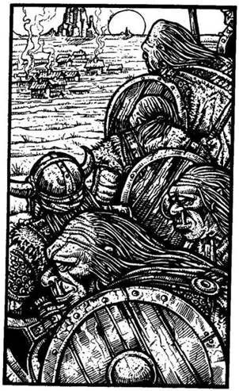
13.
Kora délelőttre Stubb igencsak izgatott lesz, mert tudja, hogy hamarosan hazaér. Másodpercekkel később azonban eszébe jut halott barátja, Morri, és ettől elszomorodik. Öklét rázza a láthatatlan Dombi Trollok felé. Egy órával később a távolban megláttok egy ég felé kanyargó füstcsíkot. „Kőhidafalva!” - kiált fel Stubb. Futásnak ered, de hirtelen megtorpan, amikor hat Dombi Trollt pillant meg, akik a faluja felé menetelnek. A törpék csatakiáltásával felemeli a csatabárdját, és rájuk ront. Nem hagyhatod, hogy a barátod egyedül harcoljon. A segítségére sietsz. Két Dombi Troll támad rád.
ÜGYESSÉG ÉLETERŐ
Első Dombi Troll 9 10
Második Dombi Troll 9 9
Egyszerre küzdj meg mindkettővel. Minden Fordulóban külön támadnak rád, de neked kell eldöntened, melyikükkel küzdesz meg először. Az általad kiválasztott Dombi Trollal úgy csapj össze, mint normális harcban tennéd. A második ellen viszont dobnod kell, hogy megállapítsd Támadóerődet. Ha a te Támadóerőd a nagyobb, kivédted a csapását, és nem sebezted meg, ha az Ő Támadóereje a nagyobb, megsebzett téged. Ha mindkettőt legyőzted - lapozz a 211-re.
14.
A Dzsinn lebegve megjelenik a Kristályharcos fölött. Csettint egyet az ujjával, erre azon nyomban láthatatlanná válsz. A Kristályharcos feléd sújt kvarcöklével, de csak a levegőt találja el. Észrevétlenül elosonsz mellette. Később elmúlik a varázs, láthatóvá válsz, de akkor már jó messze vagy az ellenfeledtől. Az alagút később egy T elágazásban ér véget. Ha balra akarsz menni - lapozz a 150-re; ha jobbra - lapozz a 368-ra.
15.
A Hóboszorkány sokáig méricskél, majd kimondja a szót: „Kör.” Mosolyogva kinyitod az öklödet, és felmutatod a négyzet alakú fémlapocskát. Túljártál az eszén, és ő vállalja a következményeket. A gömb fehér füsttel kezd megtelni, majd darabokra törik, és a Hóboszorkány képe is eltűnik. Sikolya betölti a barlangot, de legyőzted. Ujjongva csapjátok össze a kezeteket, de örömötök rövid életű, mert valami baljóslatú moraj üti meg a fületeket. A föld megremeg a lábatok alatt, és óriási repedések keletkeznek a jégfalban. A mennyezet kezd beomlani. Vajon ez lenne menekülési lehetőségetek, amit a Hóboszorkány ígért? Tedd próbára a SZERENCSÉDET! Ha SZERENCSÉD van - lapozz a 3-ra. Ha nincs SZERENCSÉD - lapozz a 358-ra.

16.
Gondosan célzol, és belevágod a tőrt a fogantyúba. Tedd próbára a SZERENCSÉDET! Ha SZERENCSÉD van - lapozz a 120-ra. Ha nincs SZERENCSÉD - lapozz a 153-ra.
17.
Mikor kardot rántasz, a Hegyi Elf éles csatakiáltást hallat, ledobja a köpenyét, és megmarkolja a kardját.
Hegyi Elf ÜGYESSÉG 6 ÉLETERŐ 6
Ha a Hegyi Elf ÉLETERŐ pontja 2-re csökken - lapozz a 305-re.

18.
A többi Madárember, aki eddig fölöttetek körözött, látva társa halálát, elszáll kelet felé. Attól tartasz, hogy egy nagyobb csapattal térnek vissza, és úgy határoztok, hogy futva indultok tovább. A nap magasan fenn jár az égen, így aztán patakokban csorog rólatok a veríték. Kibírhatatlan szomjúság gyötör, és átkozódsz, amiért nincs nálad egy vízzel teli kulacs. Végül elértek egy nagyobb gödörhöz, melyben víz csillog. Úgy érzed, mindjárt felordítasz, amikor meglátod, hogy egy halott Ogre teteme hason fekve lebeg a felszínén. Ha inni akarsz a vízből - lapozz a 301-re. Ha inkább ellenállsz a csábításnak, és nem iszol - lapozz a 63-ra.
19.
A Gyógyító mögötted áll és unszol, hogy siess át a barlangon. Csendben végigmész hát rajta, s ekkor egy hasadékon át fényt látsz beszűrődni. Úgy látod, a hasadék éppen akkora, hogy átpréseld magad rajta. Kíváncsian kérded a Gyógyítótól: - És most mi lesz? - Mire ő nyugodtan így felel: - Én innen már nem mehetek tovább. Végső megpróbáltatásoddal egyedül kell szembenézned. Hajnal előtt fel kell érned a Tűz-hegy csúcsára, hogy lásd a napfelkeltét. Ha arcodon a maszkkal, törökülésben kelet felé fordulva leülsz, mikor a felkelő nap első sugarai megjelennek a horizonton - teljesen meggyógyulsz. Ha bármilyen ezüsttárgy van a birtokodban, idehívhatjuk a Pegazust, hogy elröpítsen oda. - Ha van nálad ezüsttárgy - lapozz a 328-ra. Ha nincs - lapozz a 206-ra.

20.
Az alagút nemsokára egy T elágazásban ér véget. Ahogy a kereszteződésbe érsz, belebotlasz egy primitív külsejű emberbe, akinek a testét prémek borítják, a kezében meg egy nagy kőbunkót tart. Ez egy Barlangi Ember. Kardot rántasz, és
odakiáltasz Redswiftnek és Stubbnak, hogy rohanjanak be a jobb oldali alagútba, amíg te megküzdesz a Barlangi Emberrel.
Barlangi Ember ÜGYESSÉG 8 ÉLETERŐ 8
Ha legyőzted - lapozz a 141-re. Két Forduló után, ha akarsz, Elmenekülhetsz az alagúton, és csatlakozhatsz Redswifthez és Stubbhoz. Lapozz a 365-re.

21.
Ujjadon egy varázsgyűrű van, amelynek a viselője a legnagyobb faggyal szemben is képes ellenállni. Nyersz 1 Szerencse pontot. Ha még nem tetted volna, felhúzhatod akár az ezüstgyűrűt - lapozz a 159-re, akár a rézgyűrűt - lapozz a 130-ra. Természetesen tovább is mehetsz a következő alagúton - lapozz a 338-ra.

22.
A Hegyi Elf vállat von, és így szól: - Ne mondd, hogy nem figyelmeztettelek - ha egyszer a nyakadban van az engedelmesség lánca, nem lesz több lehetőséged rá, hogy meggondold magad. Menj végig az alagúton, amíg egy elágazáshoz nem érsz, és ott fordulj jobbra. Sok szerencsét! - Megköszönöd az Elf jó tanácsát, és folytatod az utadat. Lapozz a 136-ra.

23.
A Hóboszorkány meglepettnek és elégedettnek látszik, amiért legyőzted Zombijait. Hirtelen így szól: - A játékot, amit játszani fogunk, Lapocskáknak hívják. Te természetesen nem nyerhetsz! De ha valamilyen csoda folytán mégis te nyernél, úgy lehetőséget adok neked rá, hogy elmenekülj. Remélem, magaddal hoztad a lapocskáidat! Ha nem, úgy máris vesztettél! - Gonoszul felnevet, hisz tudja, hogy a játékszabályokat csak most találta ki. Mindazonáltal játszanod kell, ahogy parancsolta. Ha van nálad egy akármilyen pici fémlapocska - lapozz a 113-ra. Ha nincs - lapozz a 40-re.
24.
A folyadéktól forróság árad szét a testedben, és csodálatos melegséget érzel. A Hóboszorkány által készített folyadékból ittál, mely az ő követőit megvédi a hidegtől. Nyersz 3 ÉLETERŐ pontot! Az ital a fagyást is gyógyítja. Ha vesztettél ÜGYESSÉG pontot fagyás miatt, azt most visszakapod. Frissen, újult erővel indulsz el visszafelé. Lapozz az 56-ra.

25.
Most, hogy a havazás elállt, az ég ismét tiszta és kék. A levegő friss és hideg, a hó ropog a lábad alatt. Lassan haladsz felfelé a hegyoldalban, keresve a prémvadász által megjelölt barlangnyílást. Hirtelen távoli dübörgést hallasz föntről - egy lavina szörnyű hangját. Tedd próbára a SZERENCSÉDET! Ha SZERENCSÉD van - lapozz a 163-ra. Ha nincs SZERENCSÉD - lapozz a 109-re.
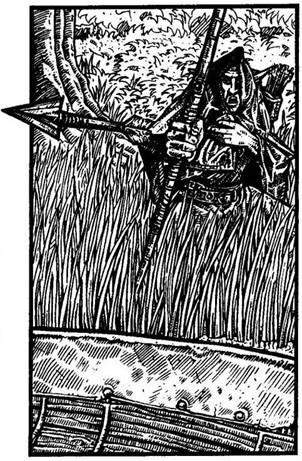
26.
Bemásztok a csónakba, és ellökitek magatokat a parttól. A folyó közepe felé jártok, amikor meghallod, hogy valaki mérgesen kiáltozik utánatok a partról. Hátranézel és megpillantod a csónak haragos tulajdonosát, egy Sötét Elfet, ismerős fekete csuklyás köpenyében. Nyílvesszőt helyez az íjába, és rád lő. Tedd próbára a SZERENCSÉDET! Ha SZERENCSÉD van - lapozz a 9-re. Ha nincs SZERENCSÉD - lapozz a 227-re.
27.
Mikor eléred a kunyhót, berúgod az ajtót, és kivont karddal rontasz be. Sajnos a kunyhó üres. A kuruzsló bizonyára gyorsan összepakolt, és meglógott az aranyaddal. Vesztesz 1 Szerencse pontot! Visszasétálsz az ösvényhez, és továbbmész fölfelé a folyó völgyében, remélve, hogy elég hosszú életű leszel ahhoz, hogy még egyszer találkozhass ezzel a kuruzslóval. Lapozz a 205-re.

28.
Az idő lassan múlik, de egyetlenegy Goblin sem tűnik fel. Nyilván a fellázadt rabszolgák győztek a barlangokban. Végül eléggé pihentnek érzed magad ahhoz, hogy továbbmenj, és Stubbra támaszkodva tovább bicegsz az alagútban. Lapozz a 166-ra.
29.
Hamarosan visszaérsz az elágazáshoz, és balra fordulva a másik alagúton mész tovább. Lapozz a 106-ra.
30.
A Halálvarázslat rajtad nem fog olyan gyorsan, mint Redswiften. Segítesz neki talpra állni, s közben mentegetőzöl, amiért miattad olvasta el a pokoli átkot. Megnyugtat, hogy jobb így meghalni, mint a jégbarlangok rabszolgájaként. Még vagy egy órát küszködsz vele, a hátadon cipeled szegényt, de ujjai hirtelen a karodba mélyednek, majd elernyed a teste - győzött rajta a Halálvarázslat! Eltemeted Elf barátodat egy avarral belepett tisztáson, aztán amilyen gyorsan csak tudsz, továbbsietsz a Holdkő-dombok felé. De gyenge vagy, és nem tudsz túl gyorsan menni. Vesztesz 1 ÉLETERŐ és 1 ÜGYESSÉG pontot! Az út egyre meredekebb lesz, ahogy eléred a dombok alját, és azon kezded törni a fejedet, vajon melyik utat válaszd, hogy megtaláld a Gyógyítót. Ha tovább akarsz menni kelet felé, a folyó mentén a dombok közé - lapozz a 46-ra. Ha inkább átmész a folyó fölött átívelő függőhídon, és délnek indulsz a dombok tövében - lapozz a 385-re.
31.
Tedd próbára a SZERENCSÉDET! Ha SZERENCSÉD van - lapozz a 295-re. Ha nincs SZERENCSÉD, észreveszik, hogy hazudsz, és közelebb jönnek. Lapozz a 143-ra.
32.
A nyílvessző elszáll a fejed fölött, és szerencsésen eléred a túlpartot, még mielőtt a Sötét Elf újra lőne.
Kiugrotok a csónakból, fügét mutatsz a Sötét Elfnek, és a Pogány-fennsíkon keresztül elindultok délnek, Kőhidafalvára. Lapozz a 278-ra.
33.
A hívők csoportja Goblinokból, Orkokból és Neander-völgyiekből áll. A hozzád legközelebb álló két lény futás közben megpróbál megállítani. Az egyik ostorával csap a lábadra, abban a reményben, hogy az a lábad köré tekeredik, míg a másik a dárdáját hajítja feléd.
Tedd próbára a SZERENCSÉDET! Ha SZERENCSÉD van - lapozz a 226-ra. Ha nincs SZERENCSÉD - lapozz a 340-re.
34.
Előveszed a botot a hátizsákodból, és a Hóboszorkány szíve felé döfsz vele. Ha ÜGYESSÉG pontjaid száma 10-nél nagyobb - lapozz a 4-re. Ha ÜGYESSÉG pontjaid száma kevesebb, mint 10 - lapozz a 123-ra.
35.
Barátaid újra nekiveselkednek, de nem tudják legyőzni a tőr erejét. Rémülten nézed, amint karod felemelkedik, és a saját mellkasodba döfi a tőrt. Kalandod itt véget ér!
36.
A kunyhó ajtaja teljesen befagyott, és a válladdal kell benyomnod. Mindössze egyetlen szoba van a kunyhó belsejében, benne egy prémvadász felszerelése. Az egyik sarokban csapdák, prémek és zsákok hevernek egy halomban. Egy faágy, egy asztal, egy szék és néhány főzőedény utal rá,
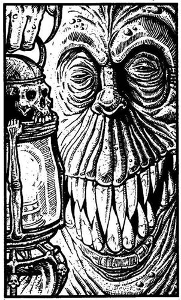
hogy a kunyhóban laknak. A tűzhelyen még meleg a hamu. Ha néhány fahasábot rá akarsz tenni a tűzre, hogy felmelegítsd az egyik fazékban lévő pörköltet - lapozz a 118-ra. Ha inkább elhagyod a kunyhót, és folytatod az utadat - lapozz a 192-re.

37.
Az előtted álló alak ismét előrelép; egy lámpást tart a kezében, és mikor a közeledbe kerül, megpillantod rémisztő ábrázatát. Arca hamuszürke, két mély gödörben ülő szeme szinte elvész a bőrredők sűrűjében. Egy Éjjeli Vadász sötét birtokára kerültél. Meg kell küzdened vele!
Éjjeli Vadász ÜGYESSÉG 11 ÉLETERŐ 8
Minden egyes Fordulóban vonj le Támadóerődből 2 pontot, mert nem vagy jártas abban, miként kell sötétben harcolni. Ha te győzöl - lapozz a 306-ra.
38.
Bár elég hűvös az idő, amikor a Vörös-folyó partján sétáltok, mégis hirtelen kiver a veríték, és szédülés fog el. Redswiftre nézel és látod, hogy ő is messze van attól, hogy jól érezze magát. Arca sápadt, szeme karikás. - Üljünk le - mondja Redswift fáradt hangon. Hálásan megállsz, és
lerogysz a fűre. Aggódsz, mert a szíved igen szaporán ver. - Emlékszel - szólal meg Redswift -‚ amikor még a Hóboszorkány barlangjaiban bolyongtunk, elérkeztünk egy ajtóhoz, amelyre egy pergamen volt kiszögezve. Nem tudtad elolvasni, mit írtak rá, és engem kértél meg, hogy én silabizáljam ki. A Halálvarázsige volt odaírva, és most mindketten annak a hatása alatt állunk. Gyorsabban hatott, mint gondoltam. Meg kell találnunk a dombok közt élő öreget, akit csak úgy hívnak, a Gyógyító. Csak ő tud segíteni rajtunk. De attól félek, már túl késő. Lábam túl gyenge, nem hiszem, hogy képes leszek felállni. Ha ittál az Egészség Italából, amely a Sötét Elfé volt - lapozz a 30-ra. Ha nem - lapozz a 367-re.
39.
Meglendíted a lábadat, és gyomron rúgod a hozzád közelebb álló Goblint. Az összegörnyed, és egy, az állára mért horogütés végleg leteríti. A másik Goblin hirtelen előrelendül, és megpróbálja beléd döfni a tőrét.
Tedd próbára a SZERENCSÉDET! Ha SZERENCSÉD van - lapozz a 240-re. Ha nincs SZERENCSÉD - lapozz a 386-ra.
40.
Úgy érzed, becsaptak, amiért elvesztetted a játékot, még mielőtt az elkezdődött volna. Kihúzod a kardodat, hogy szétvágd a Hóboszorkány gömbjét. Lapozz a 244-re.

41.
Óvatosan átmész a hídon. Miután biztonságban átértél rajta, folytathatod fáradságos utadat a hóban - lapozz a 212-re.

42.
Kibújsz a vállpántokból, és látod, amint a hátizsákod elmerül a víz alatt. Elvesztetted összes aranyadat, tárgyaidat és maradék élelmedet. Vesztesz 2 Szerencse pontot! Az erős ár magával ragad, és minden erőddel azon igyekszel, hogy ne fulladj bele a vízbe. Tedd próbára a SZERENCSÉDET! Ha SZERENCSÉD van - lapozz a 201-re. Ha nincs SZERENCSÉD - lapozz a 280-ra.
43.
Felveszed a földről a kardodat, és átkutatod a Goblinok ruháját. Találsz náluk két tőrt, némi sós heringet, egy gyertyát és 2 Aranytallért - ezeket elteszed. A nyakukban lévő fém nyakláncok már nem világítanak többé, de nem tudod azokat levenni róluk. Minthogy nem tudod, van-e még több csapda a jégvermen túl, megpróbálod eldönteni, merre is menj tovább. Ha ezen az alagúton akarsz továbbmenni - lapozz a 88-ra. Ha inkább visszamész az elágazáshoz, és a másik utat választod, lapozz a 29-re.
44.
A villám, mely beléd vág, akkora sokkot okoz, hogy nem bírod elviselni. A földre zuhansz, és elsötétül a világ a szemed előtt. Többé nem is kelsz fel. Kalandod itt véget ér!

45.
Megvizsgálod a földön fekvő ládikót, és úgy döntesz, hogy föltöröd a kardoddal. Találsz benne három díszes gyűrűt és egy repedt palackot, melyből édeskés illat árad. Ha fel akarod próbálni valamelyik gyűrűt - lapozz a 65-re. Ha inkább továbbmész a következő alagúton - lapozz a 338-ra.
46.
A folyó egyre keskenyebbé válik, az út pedig egyre meredekebb lesz. Ahogy mész, percről percre egyre gyengébbnek érzed magad. Vesztesz 1 ÉLETERŐ pontot! Elhaladsz egy nagy kidőlt fatörzs mellett, és talán fel sem figyelnél rá, ha nem vennéd észre azt a vastag liánt, mely a gyökereihez van kötve. A kidőlt fa helyén egy óriási lyuk tátong. Belenézel és látod, hogy a lián vége elvész a sötét mélységben. Mit teszel?
Meghúzod a liánt? Lapozz a 312-re.
Lemászol rajta? Lapozz a 394-re.
Továbbmész a völgyben a folyó
mentén? Lapozz a 119-re.
47.
Másfél órányi megfeszített gyaloglás után eléred a hasadék végét. Most már továbbmászhatsz, föl a hegyre. A meredek terep és az örvénylő hóesés igencsak lelassítja haladásodat. Lapozz a 337-re.
48.
Amikor fölemeled a gömböt, az egyre melegebb lesz, és amint forog, mindig más és más színűvé változik. Redswift és Stubb, miközben hátrább húzódnak, azt ajánlják, hogy tedd le. Mit csinálsz?
Továbbra is a kezedben tartod
a gömböt? Lapozz a 275-re.
Óvatosan leteszed a földre? Lapozz a 117-re.
Legurítod az alagúton? Lapozz a 318-ra.
49.
Amikor belépsz az alagútba, egy vasrács zuhan le mögötted, és megakadályozza, hogy visszafordulj. Képtelen vagy felemelni, így nem marad más hátra, mint hogy megnézd, mi van az alagút végén. Nemsokára egy másik vasrácshoz érsz, mely elzárja előtted az utat. A vasrácson túl az alagút balra kanyarodik. A szemközti falon egy gombot fedezel fel, és rögtön rájössz: azt kellene megnyomnod, hogy a vasrács fölemelkedjék. Balszerencsédre a gomb túl messze van ahhoz, hogy elérjed, még ha a kardoddal nyúlsz is felé. Ha van egy vagy több tőröd - lapozz a 234-re. Ha egy sincs - lapozz a 393-ra.
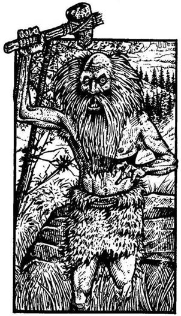
50.
Amikor a tűz közelébe érsz, sült kacsa ínycsiklandó illata csapja meg az orrodat. Kihúzod a kardodat, és óvatosan még közelebb mész. Hirtelen szikár öregember ugrik elő egy szikla mögül. Hosszú haja és szakálla van, és magas hangon sikítozik. Testét állatbőrök fedik, és magasba emelt kőbaltával támad rád. Meg kell küzdened a Domblakó Vademberrel.
Domblakó Vadember ÜGYESSÉG 6 ÉLETERŐ 5
Ha legyőzted - lapozz a 320-ra. Két Forduló után, ha akarsz, Elmenekülhetsz. A sziklákon át visszarohanhatsz a folyó északi partjára. Lapozz a 364-re.
51.
A villám úgy beléd vág, hogy a földre zuhansz. Vesztesz 1 ÜGYESSÉG és 4 ÉLETERŐ pontot. Ha még életben vagy - lapozz a 336-ra.

52.
Eszedbe jut egy régi legenda, mely szerint az őrölt Minótaurosz-szarv az egyetlen olyan anyag, amely képes megszüntetni egy átváltozás-varázslatot. Gyorsan az egyre növekvő lényre hintesz belőle egy keveset, és fellélegzel, amint az újra fehér patkánnyá zsugorodik. A legenda igaz volt!
Kíváncsi vagy, vajon mi lehet a nyitott szarkofágban - odamész és megvizsgálod. Lapozz a 297-re.
53.
Senki sem felel a kiáltásodra. Ha be akarsz menni a barlangba - lapozz a 246-ra. Ha inkább visszamennél a szurdokba - lapozz a 355-re.
54.
Meggyújtod a gyertyát, és körülnézel a veremben. Körülbelül 15 méter széles, a fatörzs viszont meglehetősen keskeny. A Gyógyító azt mondja, ha készen állsz, azonnal menj át. Dobj két kockával! Ha a kapott szám kevesebb vagy ugyanannyi, mint ÜGYESSÉG pontjaid száma - lapozz a 91-re. Ha a kapott összeg nagyobb, mint ÜGYESSÉG pontjaidnak a száma - lapozz a 78-ra.

55.
Mikor kihúzod a tőrt az ajtóból, az a hatalmába kerít, és rád kényszeríti az akaratát. Szinte önkívületben a saját lábadba vágod a kezedben tartott tőrt. Vesztesz 2 ÉLETERŐ pontot! Redswift és Stubb odarohannak hozzád, hogy segítsenek,
és megpróbálják a kezedet az ajtó felé irányítani, hogy abba szúrd a tőrt. Tedd próbára a SZERENCSÉDET! Ha SZERENCSÉD van - lapozz a 6-ra. Ha nincs SZERENCSÉD - lapozz a 236-ra.
56.
Elhaladsz a bejárati folyosó mellett, és a főfolyosón folytatod tovább az utadat. Lapozz a 395-re.
57.
Amikor kifelé mész, a Törpe fohászkodni kezd istenéhez, és megátkoz. Vesztesz 2 Szerencse pontot. Elhaladsz az elágazás mellett, és továbbmész egy másik alagútrendszerbe. Füledben cseng a Törpe átka. Lapozz a 125-re.

58.
Két satnya bokor között fekve feszülten figyelsz az egyre hangosabb patadübörgésre. Félrehúzol egy ágat, és kilesel. Négy Kentaurt pillantasz meg, amint ott robognak el előttetek; mindegyikük íjjal és nyilakkal teli tegezzel van felfegyverezve. Mozdulatlanul feküsztök, míg a paták hangja el nem hal a távolban. Mikor már biztos távolságban vannak, felálltok, és folytatjátok az utatokat dél felé. Lapozz a 278-ra.
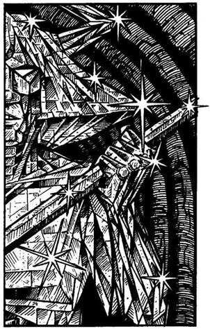
59.
A Kristályharcos, a Hóboszorkány egyik személyes testőre áll előtted, akit azért küldtek, hogy végezzen veled. Teste hatalmas kvarckristály, amit a Hóboszorkány varázsereje keltett életre. Szúró- vagy vágófegyverek nem tehetnek kárt a Kristályharcosban - a kardod itt teljesen hasznavehetetlen. Ha van nálad egy kalapács, azzal talán szétzúzhatod a Kristályharcost.
Kristályharcos ÜGYESSÉG 11 ÉLETERŐ 13
Ha nincs kalapácsod - lapozz a 2-re. Ha te nyertél - lapozz a 148-ra.
60.
A Hóboszorkány kimászik a szarkofágból, és száját nagyra tátva elindul feléd. A szemével szinte hipnotizál - egy hang mintha azt súgná neked, hogy dobd el a kardodat, és lazítsd meg a gallérodat. Dobj két kockával! Ha az összeg kisebb vagy ugyanannyi, mint ÜGYESSÉG pontjaid száma - lapozz a 8-ra. Ha a kapott összeg nagyobb, mint ÜGYESSÉG pontjaid száma - lapozz a 116-ra.

61.
Menet közben az Elf bemutatkozik. - Az én nevem Redswift, ő pedig Stubb - mondja a mosolygós Törpére mutatva. - Itt ismerkedtünk meg a gonosz Hóboszorkánynál, az ő rabszolgái vagyunk. Mindketten szeretnénk visszatérni a falunkba. Én a Holdkő-domboknál lakom, Stubb pedig Kőhidafalvára való. Ha sikerül kijutnunk ezekből a pokoli barlangokból, úgy szívesen vennénk, ha velünk tartanál. Kőhidafalva nekem is épp útba esik. De még az is elég messze van. - Mielőtt Redswift folytathatná, Stubb felkiált, és a földre mutat, ahol egy gömb fekszik. Üvegből készült, és a fáklya fényében olyan, mintha örvénylő színek izzanának benne. - Ne nyúlj hozzá! - parancsolja Redswift. - Nincs rá szükségünk, meg egyébként is, lehet, hogy csapda. - Ha nem hallgatsz Redswiftre, és felveszed a gömböt - lapozz a 48-ra. Ha inkább továbbmész - lapozz a 166-ra.
62.
A Zombi felemel egy hatalmas bunkósbotot az ajtó mögül, és előrecsoszog, hogy rád támadjon.
Zombi ÜGYESSÉG 6 ÉLETERŐ 6
Ha legyőzted - lapozz a 200-ra. Két Forduló után akár Elmenekülhetsz, oly módon, hogy visszarohansz a kereszteződéshez, és egyenesen továbbmész le az alagúton. Lapozz a 150-re.
63.
A szomjúság legyengít. Vesztesz 1 ÉLETERŐ pontot! Ennek ellenére mégsem kockáztatod meg, hogy igyál a vízből. Lapozz a 96-ra.
64.
Az óriási hófal lesodor a hegyről. A fejed egy sziklának ütődik, és elveszted az eszméletedet. Időközben a lavina megrekedt egy vízmosásban, de téged betemetett a hó. A Jégtű-hegy újabb áldozatot követelt!
65.
Megdörzsölöd a palackot, és megszagolod az ujjadat: az üvegben közönséges kölni van. Megvizsgálod a három gyűrűt, és úgy döntesz, hogy az egyiket az ujjadra húzod. Melyiket?
Az aranygyűrűt? Lapozz a 21-re.
Az ezüstgyűrűt? Lapozz a 159-re.
A rézgyűrűt? Lapozz a 130-ra.
66.
Dühöngő vihart szabadítottál el azáltal, hogy fölvetted a pajzsot. Örvénylő forgószél söpör végig az alagúton. Megveted lábadat, úgy várod a támadását. Másodpercekkel később a vihar odaér hozzád, és a törmelékek özönét zúdítva rád, szinte elsöpör. Tedd próbára a SZERENCSÉDET! Ha SZERENCSÉD van - lapozz a 294-re. Ha nincs SZERENCSÉD - lapozz a 160-ra.
67.
Letérdelsz a prémvadász mellé, és lassan a hátára fordítod. Üres tekintete a semmibe réved, szája sarkából vér szivárog. A Yeti mély sebet ejtett a mellén. Nincs remény, hogy túlélje. Nagy erőfeszítéssel a nyakad köré kulcsolja a karját, és magához húz, hogy halljad utolsó szavait. Megköszöni, hogy megpróbáltad megmenteni, és kéri, hadd bízza rád a titkát. Szörnyű fájdalmak közepette, suttogva kezd bele a történetébe. Elmondja, hogy élete nagyobbik részét a hegyek között töltötte, állatokra vadászott, a prémjüket pedig eladta, de az utóbbi öt évben a legendás Kristálybarlangok után kutatott. Ezeket a barlangokat a Hóboszorkány hívei vájták egy gleccserben. A Hóboszorkány nem más, mint egy gyönyörű, de igen gonosz boszorkány, aki a sötétség erőinek a segítségével megpróbál új jégkorszakot hozni a világra, hogy annak ő legyen egyetlen uralkodója. A Kristálybarlangok bejárata ennek a hegynek az oldalában nyílik. Nyitva van ugyan, de csak varázslattal lehet átjutni rajta. A szerencsétlenül járt vadász ezt csak tegnap fedezte fel, amikor véletlenül meglátta a Hóboszorkány egyik harcosát, amint átsétált a látszólag kemény jégfalon, és eltűnt mögötte. A vadász a bejárat fölé akasztott egy darab prémet, hogy másnap, ha visszatér, megtalálja. Sajnos a Yeti keresztülhúzta a számításait. A vadász megkér, hogy hatolj be a gonosz Hóboszorkány birodalmába, és végezz vele. Sokféle legenda kering arról, hogy mekkora kincsek vannak befagyasztva a Hóboszorkány barlangjainak a falába - ez bőséges jutalom lenne számodra. A prémvadász hirtelen görcsösen megszorít, majd csendben hátrahanyatlik a hóba. Meghalt.
Betemeted hóval, majd elgondolkodol azon, mit is tegyél. 50 Aranytallér vár, ha visszatérsz Big Jim Sunhoz, és bemutatod neki a bizonyítékot, hogy megölted a Yetit. Mégis, sokkal csábítóbbnak találod azt, hogy eljuss a Jégtű-hegy alatti Kristálybarlangokba. Úgy döntesz hát, hogy nekivágsz a nagy kalandnak - lapozz a 25-re.
68.
A Kísértet sikoltozva közli veled, hogy hamarosan meg fogsz halni. A Gyógyító főzete azonban képessé tesz rá, hogy ellenállj a csábításnak, hogy kirántott kardoddal hallgattasd el a Kísértetet. Végül is sikerül sértetlenül elhaladnod mellette. Lapozz a 19-re.
69.
Az öreg egy rejtett zsebbe gondosan elteszi az érméket, aztán elmondja, hogy két dologra kell ügyelned, ha dél felé, Kőhidafalvára mész. Először is - a legközelebbi kút mérgezett, másodszor - Kőhidafalvától északra igen sok a Dombi Troll. Sok szerencsét kíván, majd elbúcsúzik és távozik. Stubb unszol, hogy induljatok, amilyen gyorsan csak lehet, mert aggódik, hogy a Dombi Trollok megtámadják Kőhidafalvát. Lapozz a 348-ra.
70.
A Hegyi Elf felnevet és közli, hogy ő sohasem szokott meghízni, de ha elég szerencsés lenne, és le tudná venni a láncát, akkor megpróbálna elmenekülni. Alighogy befejezte a mondatot, fájdalmasan felordít. Hiába próbálja meg levenni a nyakából az engedelmesség láncát, miközben egy láthatatlan
lény bocsánatáért esedezik. Végül felhagy az ordítással, a földre rogy, arca verejtékben úszik. Megkérdezed, hogy jól van-e, de nem válaszol. Vesztesz 1 Szerencse pontot! Úgy döntesz, hogy otthagyod és továbbmész - lapozz a 241-re.
71.
Az ember felpattan a székéből, és így szól: - Valóban én vagyok. Mi bánt, idegen? - Elmeséled neki, hogy milyen kalandokon mentél át a jégbarlangokban, és azt, hogy egy varázslat lassan végez veled. Az öreg mosolyogva így válaszol: - Halálvarázslat? De hisz azt könnyű megtörni. Nem kell hozzá más, csak egy korsó általam kevert speciális gyógyfűfőzet, amit csekély 50 Aranyért megvehetsz. - Csodálkozol, hogy ez az ember pénzt kér cserébe, amiért megmenti az életedet, de úgy látod, hajthatatlan. Ha fizetsz neki a főzetért - lapozz a 149-re. Ha inkább ráijesztesz - lapozz a 390-re.
72.
Megadást színlelsz, majd hirtelen az Illuzionistához ugrasz. Sikerül megkaparintanod és a földhöz vágnod a kristályát, mely apró darabokra törik. Az Illuzionista megfordul, és magas hangon sikoltozva bemenekül a koponya szájába. Füst száll fel az összetört kristály darabjai közül, és egy kövér alak
körvonalai jelennek meg előtted - egy Dzsinn szabadult ki a kristályból! Meghajol előtted, és megköszöni, hogy életre hívtad. Közli veled, hogy hálája jeléül egyszer, amikor akarod, láthatatlanná varázsol. Többet nem mond és eltűnik. El kell döntened, hogy merre menj tovább:
Bemész a bal oldali alagútba? Lapozz a 266-ra.
Bemész a koponya száján? Lapozz a 288-ra.
Bemész a jobb oldali alagútba? Lapozz a 49-re.
73.
Sajnos te húztad a rövidebbet. Vesztesz 1 Szerencse pontot! Abban a pillanatban, ahogy megérinted az ékszerládika fogantyúját, az életre kel. Egy Áspiskígyó tekeredik a csuklódra, és még mielőtt le tudnád rázni, beléd mélyeszti a méregfogát. Vesztesz 4 ÉLETERŐ és 1 ÜGYESSÉG pontot. Ha még mindig életben vagy, sikerül továbbvonszolnod magad az alagútban. Lapozz a 20-ra.
74.
Belefújsz a furulyába, és anélkül hogy játszanál rajta, vidám dallam száll fel belőle. Úgy döntesz, hogy elteszed a bűvös furulyát a hátizsákodba. Ha még nem tetted volna:
Megnézheted a rovásírást a
boton. Lapozz a 345-re.
Megszagolhatod a rózsát. Lapozz a 317-re.
Beleolvashatsz a könyvbe. Lapozz a 356-ra.
Természetesen, ha a fent említettek közül semmihez sincs kedved, ha akarod, elhagyhatod a barlangot, és továbbmehetsz az alagúton jobbra - lapozz a 198-ra.
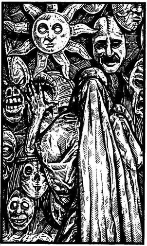
75.
Bepillantasz a barlang nyílásán, és látod, hogy az mélyen a hegy belsejébe nyúlik. Fáklyák világítják meg kísérteties fénnyel a falon lógó fafaragványokat és maszkokat. Amikor belépsz, egy díszesen öltözött figurát pillantasz meg, aki a földön ülve hátat fordít neked. Anélkül hogy megfordulna, a misztikus alak így szól: - Én vagyok a Gyógyító. Ha azért jöttél, hogy meggyógyulj, állj most elém! - A szíved szaporán kezd verni, amikor megkerülöd, és odaállsz elé. Egy iszonyatosan torz ember ül előtted; teste teljesen ki van csavarodva, ennek ellenére mégis büszkén ül, bár látszik az arcán a fájdalom. Elmondod neki, hogy Halálvarázslattal átkoztak meg, és azért jöttél, hogy meggyógyítson. - A Halálvarázslat erejét nehéz megtörni. Ez csak egyszer sikerült nekem, és akkor sem volt könnyű. Egy szertartást kell végigcsinálnom hozzá, de nem biztos, hogy túléled. Mégis meg kell próbálnod. Segíteni fogok neked, amennyire csak tudok. Először is az arcodra kell helyezned az Élet Maszkját, mely megakadályozza, hogy a Halálvarázslat továbbterjedjen. Ha túléled az első csatát élet és halál között, képes leszel rá, hogy megbirkózz a visszafordítási folyamat második szakaszával. - Ekkor a Gyógyító egy különös maszkot emel le a falról, mely a Napot jelképezi. Amikor az arcodra teszed, úgy érzed, mintha szétszakadna a tested. Dobj egy kockával, és a kapott összeget vond le ÉLETERŐ pontjaidból. Ha még mindig életben vagy - lapozz a 258-ra.
76.
Amikor látják, hogy megölted a vezetőjüket, a Kentaurok meghátrálnak. Figyelmezteted Redswiftet és Stubbot, hogy ne vegyék üldözőbe őket. Ha még nem volna pajzsod, úgy felveheted a földről azt, amelyik a Kentaur-vezér mellett fekszik. Nyersz 1 ÜGYESSÉG pontot! Ha fel akarod próbálni a Kentaur sisakját - lapozz a 362-re. Ha inkább nem nyúlsz hozza, és azonnal továbbindulsz Kőhidafalva felé - lapozz a 278-ra.
77.
Van nálad lándzsa? Ha van - lapozz a 391-re. Ha nincs - lapozz a 378-ra.

78.
Félúton vagy a fatörzsön, amikor hirtelen pánik fog el, és elveszted az egyensúlyodat. Fejjel lefelé bezuhansz a mély verembe, és azonnal meghalsz.
79.
A víz veszélytelennek látszik, de egyáltalán nincs kedved hozzá, hogy átázz és átfázz. De nincs más választásod, a vízesés alatt kell elmenned. Menet közben egyszer csak észreveszed, hogy a ruhád füstölni kezd. Futásnak eredsz, mert rájössz, hogy nem víz folyik itt, hanem sav; a csapdát minden bizonnyal a Hóboszorkány állította, hogy szökött rabszolgáit elpusztítsa. Felordítasz fájdalmadban, amikor a sav a bőrödet éri. Vesztesz 4 ÉLETERŐ pontot! Ha túlélted - lapozz a 383-ra.
80.
A Zenész csodálkozva néz rád, hogy érdekel a zenéje. Abbahagyja játékát, és így szól hozzád: - Bizonyára új ember vagy itt, mert az itt élő söpredék - kivéve természetesen szeretett Hóboszorkányunkat - nem szívesen hallgatja a zenémet. A bolondok, pedig ha tudnák, milyen szerencsét hoznak a dalaim! Figyelj jól, idegen! Most eljátszom egy kis dalt, amely begyógyítja a sebeidet. Jól figyelj, és mondd majd el a csőcseléknek, mit láttál itt, talán akkor tisztelni fognak engem és a zenémet! - A zenész egy megnyugtató, lágy dallamot kezd játszani, és döbbenten látod, hogy az egyik sebed teljesen begyógyult. Nyersz 4 ÉLETERŐ pontot! - Gyere majd vissza egy kis beszélgetésre - mondja elégedetten. Megköszönöd neki, amit érted tett, és folytatod az utadat a barlangfolyosón. Lapozz a 111-re.
81.
Bebújsz egy kiszögellés alá, miközben föntről csak úgy zuhog a hó. Amilyen szorosan csak tudsz, rejtekhelyed jégfalához simulsz, míg a lavina elvonul. Megkönnyebbült sóhajjal indulsz ismét útnak, hogy megkeresd a Kristálybarlangokat. Lapozz a 363-ra.
82.
Épp hogy csak kint tudod tartani a fejedet a vízből, de képtelen vagy kiúszni a partra. Tedd próbára a SZERENCSÉDET! Ha SZERENCSÉD van - lapozz a 201-re. Ha nincs SZERENCSÉD - lapozz a 280-ra.
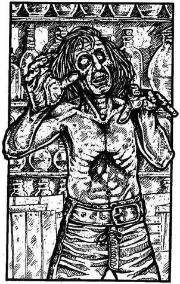
83.
Egy ember jön oda az ajtóhoz. A bőre halvány szürkésfehér. Üres tekintete és lassú mozgása kétségtelenné teszik, hogy ez egy buta Zombi! Ha meg akarod támadni - lapozz a 62-re. Ha visszarohansz az elágazáshoz, és egyenesen mész tovább - lapozz a 150-re.

84.
A villám a mellkasodba vág. Ha ÉLETERŐ pontjaid száma 10 vagy annál kevesebb - lapozz a 44-re. Ha több, mint 10 - lapozz az 51-re.

85.
Mire eléritek a dombtetőt, erősen lihegsz. Vesztesz 1 ÉLETERŐ pontot! Annyira kimerültél, hogy csak Ash figyelmeztető kiáltására veszed észre, hogy egy Halálsólyom száll feléd, és lecsapni készül rád. Ash egy nyílvesszőt lő ki a ragadozóra. Ash ÜGYESSÉGE 9. Dobj két kockával. Ha a kapott összeg Ugyanannyi vagy kevesebb, mint Ash ÜGYESSÉGE - lapozz a 175-re. Ha a kapott összeg nagyobb, mint Ash ÜGYESSÉGE - lapozz a 238-ra.
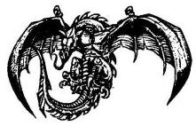
86.
A Goblinok elengedik a kötelet, és a verem peremére állnak. Nagyokat nevetnek rajtad, amiért be akartad csapni őket. Helyzeted rosszabb, mint valaha; csapdában vagy, egy jégverem mélyén, és még a kardod sincs melletted. Vesztesz 2 Szerencse pontot! Nagyot sóhajtasz, és felkiáltasz a Goblinoknak, hogy fogják meg a kötél végét, amit időközben feldobtál nekik. Megfogják, és kimászol a veremből. Mindegyik prémekbe öltözött Goblin nyakában egy halványan világító fém nyaklánc lóg. Tőrük hegyével bökdösve visszafelé terelnek az
alagútba. Rájössz, ha nem próbálsz meg megszabadulni tőlük, akkor véged. Ha puszta kézzel támadsz rájuk - lapozz a 39-re. Ha inkább megpróbálsz elfutni - lapozz a 102-re.

87.
Amint a fekete lábnyomokra lépsz, furcsa érzés kerít hatalmába. Tested remegni kezd, lábaid rogyadoznak, úgy érzed, rögtön elájulsz. Mégis kitartóan mész tovább. Mikor az utolsó lábnyomokat is elhagyod, még mindig úgy érzed, mintha kissé legyengültél volna. Vesztesz 1 ÜGYESSÉG és 3 ÉLETERŐ pontot! Az elvarázsolt barlangokat átkozva továbbmész az alagútban - lapozz a 207-re.

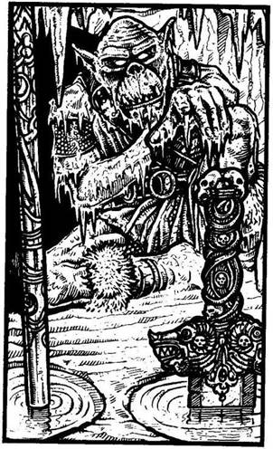
88.
Az alagút nem sokkal később egy kör alakú barlangba torkollik. Innen éppen veled szemben egy másik alagút vezet tovább. Hirtelen különös látványra figyelsz fel - a földön két tócsa van, gyenge pára száll föl belőlük. Az egyikből egy kard markolata, a másikból egy lándzsa nyele áll ki. A fal tövében egy halálra fagyott Ork tetemét pillantod meg; előrenyújtott karja a kardra mutat. Mikor közelebb mész a tócsához, egy versikét veszel észre, amit a jégpadlóba vésett valaki:
Kard és lándzsa között most választanod „kell”.
Rajtad áll, hogy győzöl-e,
Vagy itt veszel el örökre.
Eltűnődsz a vers fölött, és azon töprengsz, mitévő legyél.
Húzd ki a kardot a tócsából? Lapozz a 237-re.
Húzd ki a lándzsát a tócsából? Lapozz a 250-re.
Vágj át a barlangon a szemközti
alagúthoz? Lapozz a 221-re.

89.
Tedd próbára a SZERENCSÉDET! Ha SZERENCSÉD van - lapozz a 331-re. Ha nincs SZERENCSÉD - lapozz a 103-ra.

90.
Redswift és Stubb nem sebesültek meg a lehulló jégdaraboktól, és felsegítenek. Meglepetten veszed észre fejed fölött a kék eget. Mindhárman sietve kimásztok a jégbarlangból, és a hegyoldalban találjátok magatokat. Nem havazik, és minden békésnek látszik. Miközben lefelé mentek a hegyről, Big Jim Sunról mesélsz a barátaidnak meg arról, hogyan kerültél a Hóboszorkány Barlangjaiba. Úgy gondolod, Big Jim joggal hiheti, hogy halott vagy; ezért úgy döntesz, nincs értelme kutatni utána, hogy megkapd a Yetiért járó jutalmadat. Gyorsan ráállsz hát, hogy elkísérd Redswiftet és Stubbot Kőhidafalvára. Lapozz a 104-re.


91.
Lassan, óvatosan lépkedve eléred a verem túlsó oldalát; ettől igencsak megkönnyebbülsz. A Gyógyító hanyagul átsétál a farönkön, mintha a verem ott sem lenne. - Jól van - mondja -‚ és most készülj fel a következő próbára. Ahhoz azonban, hogy túléld, teljesen nyugodtnak kell lenned. Ha van egy sárkánytojásod, nyugtató főzetet készíthetek neked belőle. - Ha van nálad sárkánytojás - lapozz a 359-re. Ha nincs - lapozz a 271-re.

92.
Megkerülsz egy sziklát, s mögötte hatalmas termetű embert veszel észre, aki az árnyékban szunyókál. Állatbőrökön fekszik és horkol. Kétélű csatabárdját a sziklának támasztotta. Ez egy Barbár, akit dőreség lenne felébreszteni, úgy döntesz hát,
hogy elosonsz mellette. Ha Elf-csizma van a lábadon - lapozz a 128-ra. Ha közönséges csizmát viselsz - lapozz a 374-re.

93.
Sikerül félreugranod a feléd repülő ládikó útjából. Az a falnak vágódik és összetörik. Tartalma széthullik a földön. A Fagyóriás cammogva indul el feléd, hogy megöljön, de te már kivont karddal várod.
Fagyóriás ÜGYESSÉG 10 ÉLETERŐ 10
Két Forduló után akár Elmenekülhetsz az odújából a következő alagútba - lapozz a 338-ra. Ha legyőzöd - lapozz a 182-re.

94.
Megbotlasz, és véletlenül rálépsz az egyik fehér lábnyomra - lapozz a 11-re.

95.
A Gnóm odarohan hozzád, és így kiált: - Tűnj el, a vacsora csak két óra múlva lesz kész! Majd meghallod a csengőt! De elég ágrólszakadtnak látszol, ezért nem bánom, megeheted ezt a kissé száraz süteményt! - A Gnóm rámutat egy süteményre az asztalon. Ha megeszed és kimész - lapozz a 290-re. Ha inkább megtámadod a Hóboszorkány szolgáját - lapozz a 187-re.
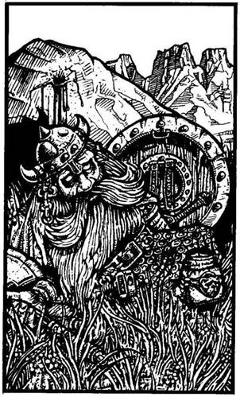
96.
Minthogy vizetek fogytán van, kissé aggódva indultok el délnek. Stubb, csak hogy vigasztaljon benneteket, közli, hogy másnap már Kőhidafalván lesztek. Csodálkozik viszont, hogy egyetlen Törpe ismerősével sem találkozott eddig. - Dehogynem - szólal meg komoran Redswift -‚ bár nem hinném, hogy így akartad volna viszontlátni őt. - Egy sziklára mutat, körülbelül 50 méterre nyugatra. Egy Törpe véres testét pillantod meg a sziklának támasztva, feje félrebillent, meg sem moccan. A bárdját még mindig a kezében tartja, és akárki vagy akármi végzett is vele, nem járhat túl messze. Stubb a Törpéhez rohan, és keservesen jajveszékel: - Ez Morri, a kovács! - kiáltja. - Úgy látom, a Dombi Trollok tették! Temessük el Morrit, és amilyen gyorsan csak lehet, vigyük el a szörnyű hírt Kőhidafalvára. Itt van Morri kulacsa, fogd! Neki úgysem lesz már rá szüksége. - Benyakalod a vizet, és végre felfrissülsz. Nyersz 1 ÉLETERŐ pontot! Eltemetitek Morrit, a sírjára teszitek a bárdját és a sisakját, majd elindultok Kőhidafalva felé. Lapozz a 110-re.

97.
A könyvben szöveg nincsen, viszont az oldalak helyét kivágták, és egy aranyláncon függő talizmánt helyeztek bele. Ez a talizmán egy zöld
jádebéka. Ha a nyakadba akarod tenni a láncot - lapozz a 327-re. Ha inkább a könyvben hagyod, úgy is jó, vagy ha még nem tetted volna:
Belefújhatsz a furulyába. Lapozz a 74-re.
Elolvashatod a boton lévő
rovásírást. Lapozz a 345-re.
Megszagolhatod a rózsát. Lapozz a 317-re.
Ha a fentiek egyikéhez sincs kedved, kimehetsz a barlangból, és elindulhatsz az alagúton balra - lapozz a 198-ra.
98.
Bár még szédelegsz a villámcsapás következményeitől, mégis gyorsan el kell döntened, mit is tegyél. Ha föl akarsz állni, és el akarsz futni - lapozz a 262-re. Ha inkább megpróbálod összezúzni a gömböt a kardoddal - lapozz a 244-re.
99.
Az Illuzionista hangosan felnevet, amikor látja, hogy kardod csupán az egyik illúzióvarázslatát hasítja szét, azután tőrét a válladba döfi. Vesztesz 2 ÉLETERŐ pontot! Lapozz a 279-re.
100.
Az Elf megkérdi tőled, miért keresed a Gyógyítót. Elmeséled neki, hogyan harcoltál a jégbarlangokban, hogyan ért benneteket a Halálvarázslat, és hogy Szegény Redswift miként végezte. - Redswift! - kiált föl az Elf. - Hisz ő az én fivérem! - Elmondja, hogy az ő neve Ash, és fogalma sem volt róla, hogy a fivére a Hóboszorkány fogságába esett. Redswift halálhíre elszomorítja, majd hirtelen feláll, és némán tesz néhány lépést a napfény felé. Kisvártatva így szól: - Segítek neked, hogy megtaláld a Gyógyítót, de egyedül kell beszélned vele, mert ő csak a betegekkel hajlandó szóba állni. A Sötétek, az éjszaka gonosz szellemei betegséggel és kínnal átkozták és nyomorították meg, mert meggyógyított egy Nikodémusz nevű varázslót, akit a Sötétek Halálvarázslattal sújtottak. Most magányosan gyakorolja mesterségét a dombok között. Kövess, azt hiszem, nincs vesztegetni való időnk! - Ash, minden veszélyre figyelve, elindul előtted. Fölfelé mentek a völgyben, és egy óra múlva elértek egy függőhídhoz, mely a folyón ível át. Ash közli veled, hogy át kell menned a hídon. Pihenned kellene előbb, válaszolod, mert a Halálvarázslat egyre inkább legyengít. Vesztesz 1 ÉLETERŐ pontot! Miután kipihented magad, közlöd Ashsel, hogy most már folytathatod az utadat, és rálépsz a hídra. Körülbelül félúton Vagy, amikor kiabálást hallasz. Körülnézel, és két Dombi Trollt veszel észre, amint a híd tartóköteleit vagdossák át. Amilyen gyorsan csak tudsz, rohanni kezdesz a túlsó part felé. Tedd próbára a SZERENCSÉDET! Ha SZERENCSÉD van - lapozz a 273-ra. Ha nincs SZERENCSÉD - lapozz a 181-re.
101.
A piros edény alján egy négyzet alakú fémlapocska hever. Úgy döntesz, hogy elteszed a hátizsákodba. Ha bele akarsz nézni a szürke edénybe - lapozz a 344-re. Ha nem akarsz, kimehetsz a barlangból a szemközti ajtón - lapozz a 176-ra.
102.
- Állj! - kiáltanak utánad a Goblinok. De te futsz tovább. Mindketten megcéloznak, és feléd hajítják a tőrüket. Dobj egy kockával! Ha 1-et vagy 2-t dobsz - lapozz a 140-re. Ha 3-at vagy 4-et dobsz - lapozz a 330-ra. Ha 5-öt vagy 6-ot dobsz - lapozz a 245-re.
103.
A Hegyi Elf meglepettnek látszik és megkérdi, miért nem viseled az engedelmesség láncát. Látod, hogy az ő nyakában egy fémlánc van, mely a félhomályban gyengén világít. Rögtön rájössz, hogy ez lehet az a lánc, amiről beszélt. Ha azt feleled neki, hogy mostanában meghíztál egy kicsit, és a láncot épp meg akarod hosszabbítani - lapozz a 70-re. Ha inkább megtámadod az Elfet, még mielőtt az riasztaná az őrséget - lapozz a 382-re.
104.
Az utatok délre hosszú és fárasztó, de mégis vállaljátok, csak hogy minél távolabb kerüljetek a Jégtű-hegyektől. Két napra rá, hogy elindultatok a jégbarlangokból, eléritek a Kok folyót. Körülbelül 80 kilométerre innen fekszik Fang városa, ahol Sukumvit báró hírhedt Halállabirintusa várja minden évben a bátrakat a Bajnokok Próbáján. Az
évnek ebben a szakában azonban nem valószínű, hogy e város érdekesebb lenne a többi folyó menti társánál. Úgy határoztok, hogy inkább lefelé mentek a folyó mentén, hátha találtok egy hidat vagy egy révészt. Vagy egy félórája mentek már a széles, piszkosbarna folyó mentén, amikor egy tutajt pillantotok meg a parthoz kikötve. Egy ember alszik rajta. Odakiáltasz neki, és megkéred, hogy vigyen át. Elküld és közli, hogy ő ma túl fáradt ahhoz, hogy dolgozzon. Ha fel akarsz ajánlani neki 10 Aranyat, hogy gondolja meg magát - lapozz a 315-re. Ha inkább továbbmész - lapozz a 131-re.

105.
Ash csak a kedvező alkalomra vár, és újra lő. Ezúttal nem véti el. A Halálsólyom a földre zuhan, melléből Ash nyila áll ki. A domb túloldalán egy szurdok van. Ash közli veled, hogy innen már egyedül kell továbbmenned, hogy megkeresd a Gyógyítót. Búcsúzáskor még elmondja, hogy kelet felé kell menned a szurdokban mindaddig, míg egy sziklához nem érsz, melybe egy Főnix-fejet véstek. A Gyógyító a domboldalban él egy barlangban, közvetlenül a főnixes szikla felett. Megköszönöd Ash hozzád való jóságát, és lassan elindulsz a dombról lefelé, a szurdokba. A domb aljában, ahogy Ash tanácsolta, balra fordulsz. Lapozz a 252-re.
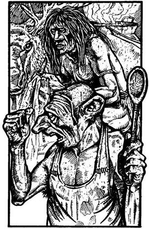
106.
Az alagút bal oldali falában nemsokára egy nyílást pillantasz meg. Odamész és bekémlelsz. Egy kisebb barlangba látsz be, ahol egy Gnóm egy Neander-völgyivel ordítozik. Ha úgy döntesz, hogy bemész ebbe a kezdetleges konyhába - lapozz a 95-re. Ha inkább továbbmész - lapozz a 267-re.

107.
Megbotlasz, de sikerül elkerülnöd, hogy rálépj akár a fehér, akár a fekete lábnyomokra. Visszanyered az egyensúlyodat, és szépen továbbmész a lábnyomok között lépkedve. Lapozz a 207-re.

108.
A hívők fölkapnak, és odavisznek a kékre festett jégkörhöz, melynek közepén a bálvány áll. Vad ordítozások és kiáltások közepette bedobnak a kék kör közepére. A bálvány jéggé dermedt végtagjai megrándulnak, amikor már a körön belül vagy - egy Jégdémont keltettél életre.
Jégdémon ÜGYESSÉG 9 ÉLETERŐ 11
A szokásos támadáson kívül minden Fordulóban dobj egy kockával, hogy megállapítsd, vajon a bálvány orrlyukaiból feléd lövellő fagyasztógáz kárt tesz-e benned. Ha 1-et, 2-t vagy 3-at dobsz, a gáz eltalál, és ekkor vesztesz 1 ÉLETERŐ pontot. Ha 4-et, 5-öt vagy 6-ot dobsz - a gáz célt téveszt. Ha te nyersz - lapozz a 184-re.

109.
Fölnézel, és a hegyoldalban egy feléd tartó óriási hózuhatagot látsz. Elfog a rémület, amikor ráeszmélsz, hogy pont a lavina útjában állsz. Körülné-
zel, és egy kiszögellést veszel észre, amely alá behúzódhatsz. A lavina már csak száz méterre lehet tőled, amikor rohanva menekülsz a szikla alá. Dobj két kockával! Ha a kapott összeg ugyanannyi vagy kevesebb, mint ÜGYESSÉG pontjaid száma - lapozz a 81-re. Ha a kapott összeg nagyobb, mint ÜGYESSÉG pontjaid száma - lapozz a 371-re.

110.
Esteledik, és Stubb akarata ellenére úgy döntötök, hogy letáboroztok a sziklák és bokrok tövében. Tüzet raktok és lepihentek. Redswift áll őrt elsőnek. Tedd próbára a SZERENCSÉDET! Ha SZERENCSÉD van - lapozz a 399-re. Ha nincs SZERENCSÉD - lapozz a 251-re.

111.
A távolból kántáló hangokat hallasz; hamarosan egy nagy barlang bejáratához érsz. Odabent a Hóboszorkány alattvalók látod; tízen vannak, és éppen alázattal borulnak le egy démon képmása előtt. A barlangnak két kijárata van: az egyik veled szemben, a másik jobb kéz felől. Ha úgy teszel, mintha te is a démonimádók egyike lennél, és szép nyugodtan besétálsz a barlangba - lapozz a 300-ra. Ha óvatosan belopakodsz a barlangba - lapozz a 283-ra.

112.
Ha van parittyád, és használni akarod a Fagyóriás ellen - lapozz a 373-ra. Ha inkább a kardoddal küzdesz meg vele - lapozz a 292-re.

113.
A Hóboszorkány gyorsan elmondja a játékszabályokat; kiválasztasz egy lapocskát, és a markodba rejted. Ő mond majd egy alakzatot. A négyzet üti a kört, a kör üti a csillagot, a csillag üti a négyzetet. Ha te nyersz, lehetőséged van rá, hogy elmenekülj. Ha vesztesz - meghalsz. Ha mind a ketten ugyanazt választjátok, újra játszotok. Életed a döntésedtől függ. Válassz alakzatot! Természetesen csak azt választhatod, ami nálad van. Melyiket választod?
A négyzet alakút? Lapozz a 15-re.
A kör alakút? Lapozz a 152-re.
A csillag alakút? Lapozz a 392-re.
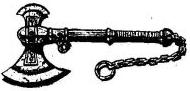
114.
Sikerül visszanyerned hatalmadat az akaratod fölött, és felkapod a botodat. Ezúttal még eltökéltebben döföd a Hóboszorkányba. Lapozz a 4-re.

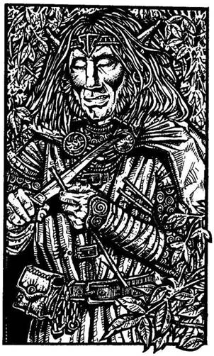
115.
Tőled balra a fák között egy magas embert veszel észre. Hegyes füle és szőke haja van. Zöld köpenyt visel, és éppen nyílvesszők faragásával van elfoglalva. Ez egy Elf, és külsőre igen hasonlít Redswiftre. Ha meg akarod kérdezni tőle, hogy hol él a Gyógyító - lapozz a 100-ra. Ha inkább rátámadsz a kardoddal - lapozz a 397-re.

116.
Azt veszed észre, hogy engedelmeskedsz a parancsainak. Meglazítod gallérodat, hogy szabaddá tedd számára a nyakadat, hogy a véredet szívhassa. Örökké a szolgája leszel az élőholtak világában.
117.
Attól tartva, hogy valami szörnyű dolog történik, Redswift és Stubb visszahőkölnek, amikor a gömböt a földre teszed. De nem történik semmi rendkívüli, csupán annyi, hogy a gömb újra fényleni kezd. Vállat vonsz, és társaid után indulsz - lapozz a 166-ra.
118.
A tűz hamarosan föllángol, és vidáman pattog a kandallóban. Egyre jobban érzed magad, ahogy a lángok melege átjárja a testedet. A pörkölt jóízű, és érzed, amint erőd lassan visszatér. Nyersz 3 ÉLETERŐ pontot! Újult erővel úgy döntesz, hogy továbbmész. Lapozz a 192-re.

119.
Balra egy keskeny csapást látsz, mely a folyópartról vezet a fák közé. Ha ezen az ösvényen mész tovább - lapozz a 168-ra. Ha inkább a folyó völgyében mész tovább - lapozz a 205-re.
120.
A tőr eltalálja a gombot, és a vasrács lassan felemelkedik. Nyersz 1 Szerencse pontot. Nem vesztegeted az idődet, átfutsz a rács alatt, és balra fordulsz. Addig mész, míg egy kereszteződéshez nem érsz. Előtted és tőled balra életnek semmi nyomát nem látod - de jobbról egy különös, emberszerű lény közeledik feléd. Lapozz az 59-re.
121.
Halálra rémülve veszed észre, hogy nincs nálad olyan fegyver, amellyel megölhetnél egy Vámpírt. A Hóboszorkány fokozatosan a hatalmába kerít, és arra kényszerít, hogy tedd szabaddá a nyakadat, hogy a véredet szívhassa. Örök időkre a szolgája leszel az élőhalottak világában.

122.
A villámcsapás, mely eltalál, borzalmas megrázkódtatás a számodra. Vesztesz 1 ÜGYESSÉG és 4 ÉLETERŐ pontot! Ha még mindig életben vagy - lapozz a 322-re.
123.
A Hóboszorkánynak előbb-utóbb sikerül úrrá lennie a fokhagymától való félelmén, és kiüti a botot a kezedből. Tekintete átható, és egy hangot hallasz, mely egyre csak azt hajtogatja, hogy dobd el a fokhagymát, és tedd szabaddá a nyakadat. Dobj két kockával! Ha a kapott összeg ugyanannyi vagy kevesebb, mint ÜGYESSÉG pontjaid száma - lapozz a 114-re. Ha a kapott összeg nagyobb, mint ÜGYESSÉG pontjaid száma - lapozz a 134-re.
124.
Mikor a harmadik sziklára lépsz, megcsúszik a lábad, és a folyóba pottyansz. A víz elsodor, és képtelen vagy az árral szemben úszni. Ha 400 vagy annál több Arany van nálad - lapozz a 381-re. Ha 400-nál kevesebb aranyad van - lapozz a 82-re.
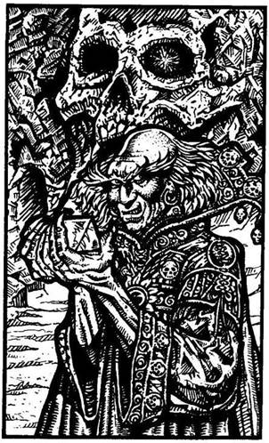
125.
A gleccserből kivezető alagút a hegyoldalban ér véget. A falak itt már nem jégből, hanem kőből vannak. Ha marosan egy tágas barlangba érsz, ahonnan három kijáraton lehet kijutni. Az egyik tőled balra, a másik jobbra, a harmadik, mely egy faragott koponyára emlékeztet, épp veled szemben van. Amint belépsz a barlangba, egy visszataszító külsejű ember lép elő a koponya szájából. Előrenyújtott kezében egy üvegkristályt tart. Rád parancsol, hogy fordulj vissza, mert csak a Hóboszorkány személyes szolgái léphetnek be a hegy belsejébe. Ha van egy varázsfurulyád, azt mondhatod neki, hogy arra kértek, játssz valamit a Hóboszorkánynak. Lapozz a 299-re. Ha akarod, megtámadhatod a kardoddal - lapozz a 156-ra.

126.
Az Agypusztító undorító csápjai összevissza rángatóznak, míg teljes erejével arra koncentrál, hogy magához vonzzon. Képtelen vagy ellenállni, és révületedben elindulsz a förtelmes lény felé. Reményvesztetten és tehetetlenül nézed, ahogy egyik csápját a nyakad köré tekeri. Gyengének érzed magad, és minden elsötétül előtted, amint az Agypusztító kezdi elszívni szellemi erődet. Vesztesz 2 ÜGYESSÉG és 6 ÉLETERŐ pontot! Ha még ezután is életben vagy - lapozz a 213-ra.
127.
A kardod ismét célt téveszt, és a tőr kardforgató karodba mélyed. Vesztesz 2 ÉLETERŐ és 1 ÜGYESSÉG pontot! Kétségbeesve, őrjöngve csapsz a kardoddal a három tükörkép felé, melyek tőrükkel feléd döfnek. Tedd próbára a SZERENCSÉDET! Ha SZERENCSÉD van - lapozz a 232-re. Ha nincs SZERENCSÉD - lapozz a 361-re.
128.
Sikerül csendben elosonnod az alvó Barbár mellett, és folytatod az utadat a szurdokban. Lapozz a 319-re.
129.
A fejedre mért ütéstől elveszíted az eszméletedet. A Halálvarázslattól amúgy is legyengült szervezeted ezt már nem képes elviselni. Kalandod itt véget ér.
130.
Egy varázsgyűrű van az ujjadon, melynek hatalma folytán egyetlenegyszer egy harcost hívhatsz segítségül. Nyersz 1 Szerencse pontot. Ha még nem tetted volna, felhúzhatod az aranygyűrűt - lapozz a 21-re -‚ vagy az ezüstgyűrűt - lapozz a 159-re. Egyébként tovább is mehetsz a következő alagúton át - lapozz a 338-ra.

131.
Távolabb a parton egy fához kikötött ladikot találtok. Körülnézel, de a tulajdonosát sehol nem látod. Ha át akarsz evezni a folyón - lapozz a 26-ra. Ha inkább megvárod a csónak tulajdonosát - lapozz a 289-re.
132.
A tőr épp hogy csak célt téveszt, és lepattan a kőfalról. Ha van még egy tőröd - lapozz a 16-ra. Ha nincs - lapozz a 393-ra.

133.
Előrenyújtod a kezed, és sikerül úgy esned, hogy nem ütöd meg magad. Miközben feltápászkodsz, a barlang mélye felől közelgő léptek zaja üti meg a füledet. A távolban imbolygó fény dereng, és egy púpos, vézna alak körvonalai rajzolódnak ki. Az ismeretlen lassan cammog feléd. Ha bevárod, hogy megnézd, ki az - lapozz a 37-re. Ha inkább kirohansz a barlangból - lapozz a 355-re.

134.
Akaratodat a Hóboszorkány irányítja, és azon kapod magad, hogy engedelmeskedsz a parancsának. Elejted a fokhagymát, és szabaddá teszed a nyakadat, hogy a véredet szívhassa. Örök időkre a szolgája leszel az élőhalottak világában.

135.
Az alagút végében egy újabb ajtó van, melyen egy régi pergamen lóg. Az írás kissé megkopott rajta, és a nyelvet sem ismered, amelyen a szöveget írták. Tudod, hogy az Elfek sokféle nyelvet beszélnek, ezért megkéred Redswiftet, próbálja meg elolvasni. Amíg olvassa, tágra nyílik a szeme a rémülettől. Megkérdezed, mi a baja, de nem válaszol. Lekapja a pergament az ajtóról, és apró darabokra tépi. A kilincset lenyomva így szól: - Gyerünk tovább, nincs vesztegetni való időnk! - Stubb-bal egymásra néztek, vállat vontok, és úgy döntötök, hogy engedelmeskedtek a feldúlt Redswiftnek. Az ajtó egy újabb alagútra nyílik. Néhány méter megtétele után észreveszed, hogy ahol állsz, a mennyezet cseppköveiről víz csurog alá. Ha van pajzsod - lapozz a 230-ra. Ha nincs - lapozz a 79-re.
136.
Hamarosan elérsz ahhoz az elágazáshoz, melyről a Hegyi Elf mesélt neked. Úgy döntesz, hogy megfogadod a tanácsát, és jobbra fordulsz az alagútban. Lapozz a 106-ra.

137.
Az alagútban hamarosan egy T elágazáshoz érsz. Balról segélykiáltást hallasz. Ha balra mész - lapozz a 311-re. Ha jobbra mész - lapozz a 125-re.
138.
A Hóboszorkány, mielőtt választana, mélyen a szemedbe néz. Ez alkalommal azt mondja: - Csillag! - Rémület ül ki az arcodra, mikor kinyitod az öklödet, és elővillan a csillag alakú lapocska. A Hóboszorkány felkacag, és egy újabb villám csap beléd. Azonnal megöl. Kalandod itt véget ér.
139.
Kíváncsi vagy, vajon mit rejt a szarkofág. Odamész hát, és megvizsgálod. Lapozz a 297-re.

140.
A Goblinok remekül értenek a tőrvetés művészetéhez. Mindketten eltalálnak: az egyik a válladat, a másik a combod hátulját. Vesztesz 4 ÉLETERŐ és 1 ÜGYESSÉG pontot. Mielőtt a fájdalomtól meggyötörve továbbfutnál, megállsz, gyorsan kihúzod magadból a tőröket, és visszahajítod a Goblinok felé. Lapozz a 29-re.
141.
A Barlangi Ember övén lévő erszényben egy csillag alakú fémlapocskát találsz, amit a hátizsákodba teszel. Nincs kedved több Barlangi Emberrel találkozni, így aztán végigfutsz az alagúton, és csatlakozol Redswifthez és Stubbhoz. Lapozz a 365-re.
142.
Ash elég erős. Egyik kezével a függőhídba kapaszkodva elkap, nehogy elsodorjon az ár. Sikerül kimentenie a túlpartra, de ez a megpróbáltatás 1 ÉLETERŐ pontodba kerül. Egypercnyi pihenőt sem hagy, hogy kifújd magad; sürget, hogy kövesd őt az ösvényen, a dombok felé. Lapozz a 85-re.

143.
A hívők csoportja Orkokból, Goblinokból és Neander-völgyiekből áll. Túl sokan vannak ahhoz, hogy legyőzhesd őket, így aztán elfognak. Megragadnak, és a kékre festett jégkörhöz tuszkolnak, ahol a bálvány áll. Vad ordítozás és kiabálás közepette a kör közepére löknek. A bálvány végtagjai
megrándulnak, amikor már a körön belül vagy - egy Jégdémont keltettél életre.
Jégdémon ÜGYESSÉG 9 ÉLETERŐ 11
Szokásos támadásán kívül még jéghideg gázt is lövell rád az orrlyukaiból - ezért minden Fordulóban dobj egy kockával. Ha 1-et, 2-t vagy 3-at dobsz, fagyos fújtatása eltalál, és vesztesz 1 ÉLETERŐ pontot! Ha 4-et, 5-öt vagy 6-ot dobsz, a gáz célt téveszt. Ha legyőzöd - lapozz a 184-re.
144.
Megkérdezed a Kentaurokat, hogy útjuk során nem találkoztak-e valamiféle szörnnyel a Pogány-síkságon. Vezérük szigorúan rád néz, és így szól: - Nem! - Azonban sebeidet és tömött hátizsákodat látva megkérdi, vajon nem kincskereső úton jártál-e. Ha igennel válaszolsz - lapozz a 272-re. Ha inkább azt mondod, hogy a Sötét Elfek támadtak meg, amikor átkeltél a Kok folyón, és hátizsákodban nincs más, mint az ő sisakjaik és törött fegyvereik - lapozz a 233-ra.
145.
Előrántod a kardodat, és lefelé indulsz az alagútban. Két ronda pofájú Goblin terem előtted, nyakukban fémlánc fénylik. Észrevesznek, tőrt rántanak, és vicsorogva közelítenek feléd.
ÜGYESSÉG ÉLETERŐ
Első Goblin 5 5
Második Goblin 5 4
Külön-külön vívj meg mindkettővel. Ha te győzöl - lapozz a 347-re.

146.
Egy madár képe jelenik meg lelki szemeid előtt. Álmodban felülsz, és elkiáltod magad: - Főnix! - Felriadsz és elcsodálkozol, hogy miért van sötét. Aztán eszedbe jut, hogy valószínűleg hosszú órákat aludtál át, és a nap perceken belül felkel. Arcodon megigazítod a Nap-maszkot, keletnek fordulsz, és pislogni is alig mersz, nehogy elszalaszd a felkelő nap első sugarait. A látóhatár vörösen derengeni kezd, és lassan felbukkan a nap. Ebben a pillanatban megtörik a Halálvarázslat. Lapozz a 400-ra.
147.
Mielőtt az írás eltűnne, megtanulod a varázsigét, mely egy Levegő Elem támadása ellen nyújt védelmet. Nyersz 1 Szerencse pontot! Jól az agyadba vésed a következő szavakat: „Gul Sang abi Daar”, majd eldöntöd, mit is csinálj. Ha még nem tetted volna, belenézhetsz a piros edénybe - lapozz a 101-re, vagy a szemben lévő ajtón át elhagyhatod a barlangot - lapozz a 176-ra.

148.
Átlépsz a Kristályharcosból maradt kristálydarabok fölött, és továbbmész az alagútban, míg egy T elágazáshoz nem érsz. Ha balra fordulsz - lapozz a 150-re. Ha jobbra mész - lapozz a 368-ra.

149.
Kinyitod a hátizsákodat, és szabadkozva átadsz az öregnek 50 Aranytallért. Az, még mindig mosolyogva, levesz egy korsót a polcról, és a tartalmát beleönti egy levessel teli fazékba, mely a konyhában áll a nyílt tűzön. Egy tálba tölti a főzetet, és miközben feléd nyújtja, így szól: - Ez majd megteszi a magáét! Körülbelül egy óra múlva fog hatni,
úgyhogy azt ajánlom, menj, és feküdj le a folyóparton a napra. Meglásd, egykettőre jobban fogod érezni magad! - Megeszed a levest, gyorsan köszönetet mondasz neki, és visszamész az ösvényen, hogy egy jó kis helyet keress, ahol kipihenheted magad. Lapozz a 209-re.

150.
Az alagutat egy ajtó zárja le. Lenyomod a kilincset, és az ajtó kinyílik. Egy hatalmas, jégfalakkal körülvett, magas csarnokba jutsz. A csarnok közepén nyitott szarkofág áll, fedelét az oldalához támasztották. A szarkofágból hirtelen egy patkány ugrik ki, és feléd rohan. Megáll előtted, és alakot változtatva hirtelen nőni kezd. Ha van nálad őrölt Minótaurosz-szarv - lapozz az 52-re. Ha nincs - lapozz a 223-ra.
151.
Túl gyenge vagy ahhoz, hogy a fejedet kinn tartsd a vízből. A súlyod lehúz, és egy kevés vizet is nyelsz. Vesztesz 2 ÉLETERŐ pontot! Ha még mindig nem akarsz megválni a hátizsákodtól - lapozz a 360-ra. Ha leveszed a hátizsákodat - lapozz a 42-re.
152.
A Hóboszorkány sokáig bámul, majd így szól: - „Kör!” - Hangosan fellélegzel, majd kinyitod a markod, és felfeded a kör alakú lapocskát. A Hóboszorkány mérgesen közli, hogy ezután más szabály érvényes, és ha ugyanazt válaszolod, mint ő, akkor is ő nyer. Átkozod magadban, de újra kell választanod. Melyik lapocskát rejted a markodba?
A négyzet alakút? Lapozz a 270-re.
A kör alakút? Lapozz a 291-re.
A csillag alakút? Lapozz a 138-ra.

153.
Menekülési terved csődöt mondott, és a hegy alagútjainak foglya vagy. Tudod, hogy a Hóboszorkány őrei nemsokára rád találnak, és örök életedre rabszolgaság vár rád. Küldetéseden megbuktál.

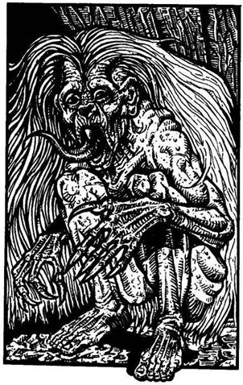
154.
A barlang mélye felől hirtelen egy félelmetesen üvöltő női hang üti meg a füledet. A gyászos jajveszékelés szörnyű, keserves sikolyba csap át. A Gyógyító elmondja, hogy ezek a kiáltások a Kísértettől származnak, akit ők Banshee-nek neveznek. Ez egy undorító szellem, akinek a feje és a keze összezsugorodott, és csupán egyetlenegy foga és egy orrlyuka van. A Gyógyító azt is elmondja, hogy ha bátran elmész a szellem mellett, semmi bántódásod nem esik. - Ne szólj hozzá, és ne érintsd meg! A legjobb, ha egyszerűen tudomást sem veszel róla. Nem bánthat, ha engedelmeskedsz az utasításainak. Közvetlenül mögötted megyek majd, ne aggódj miattam - mondja nyugodtan a Gyógyító. Továbbmentek a barlangban, míg észre nem veszitek a rettegett Bansheet. Még szörnyűbbnek látszik, mint amilyennek a Gyógyító leírta. Vörös karikák keretezik a szemet, teste görnyedt. Megpróbálsz nyugalmat erőszakolni magadra, de érzed, hogy a vér csak úgy lüktet az ereidben. Egy perc alatt előtted terem, amikor el akarsz menni mellette, és a legszörnyűbb halálsikolyt bocsátja ki magából, amit életedben valaha is hallottál. Igen nagy kísértést érzel, hogy a szeme közé nézz, és lesújts rá a kardoddal. Ha ittál a sárkánytojás-főzetből - lapozz az 5-re. Ha nem ittál a főzetből - lapozz a 185-re.

155.
Körülnézel, és megkönnyebbülve látod, hogy Redswift és Stubb szintén elintézték az ellenfeleiket. Gyorsan átvizsgálod a Goblinok erszényét, de csak száraz kenyeret és néhány faszéndarabot találsz. De ha a kardod eltörött, elveheted az egyik Goblinét. Nyersz 1 ÜGYESSÉG pontot! Bár tested sajog a sebesülésektől, mégis azt mondod Redswiftnek és Stubbnak, hogy tovább tudsz menni. Az örökké vidám Stubbra támaszkodsz, és bicegve elindulsz az alagúton lefelé. Lapozz a 166-ra.

156.
A ronda ember gúnyosan elmosolyodik, amikor kardot rántasz; megdörzsöli a kristályát, és hirtelen két tökéletes hasonmása jelenik meg előtted. A három alak tőrrel a kezében feléd tart. Kettő közülük biztosan csak illúzió, de vajon melyikük a valódi öreg? Melyiket támadod meg?
A bal oldalit? Lapozz a 99-re.
A középsőt? Lapozz a 307-re.
A jobb oldalit? Lapozz a 232-re.
157.
A lándzsa jeges nyele kicsúszik a kezedből, miközben elhajítanád. Fegyvered a Yeti mellett röpül el, és beleáll a hóba. Lapozz a 378-ra.
158.
Nagy levegőt veszel, és kortyolsz egyet a zöld színű folyadékból. Minthogy semmi rosszat nem érzel, kiiszod az egészet. Lassan elmúlik rólad a fáradtság, és fájdalmad is megszűnik; úgy érzed magad, mint aki újjászületett. Az Egészség Italát ittad meg. Nyersz 1 ÜGYESSÉG, 4 ÉLETERŐ és 1 Szerencse pontot! Lapozz a 173-ra.

159.
Az ujjadon lévő gyűrű elszívja az erődet. Dobj egy kockával, és a kapott számot vond le ÜGYESSÉG pontjaidból, majd dobj két kockával, és a kapott összeget vond le ÉLETERŐ pontjaidból. Ha még életben vagy, lehúzod ujjadról a gyűrűt, és széttaposod. Ha még nem tetted volna, felhúzhatod az aranygyűrűt - lapozz a 21-re - vagy a rézgyűrűt - lapozz a 130-ra. De tovább is mehetsz a következő alagúton - lapozz a 338-ra.

160.
A Levegő Elem ereje felröpít, és a falhoz vág. Vesztesz 1 ÜGYESSÉG és 4 ÉLETERŐ pontot! Ha volt sárkánytojás a hátizsákodban, az mind eltörött, és ki kell radíroznod a Felszerelési Tárgyak listájáról. Ha még életben vagy - lapozz a 372-re.
161.
Végre eléred a szurdok végét, és azon tűnődsz, vajon merre is menj tovább. A Halálvarázslat egyre jobban hat - vesztesz 2 ÉLETERŐ pontot! Kezded elveszíteni a reményt, hogy valaha is megtaláld a Gyógyítót. Ha kelet felé akarsz továbbmenni a szurdok szikláin át - lapozz a 302-re. Ha a szurdokon mész tovább - lapozz a 269-re.

162.
Majdnem lecsúszol a sziklákról, de végül is sikerül elérned a túlsó partot. Lapozz az 50-re.
163.
Fölpillantasz, és iszonyú tömegű havat látsz a hegyről lefelé zúdulni. Szerencsédre a lavina a melletted lévő sziklán söpör végig, és nem azon, amelyiken te állsz. Lapozz a 363-ra.
164.
Egy pompás kardot találsz az egyik halott Troll kezében. Lefejted az ujjait a markolatról, és felveszed a szépen megmunkált fegyvert. Olyan éles, hogy könnyűszerrel lekaszabolsz vele egy közeli faágat. Nyersz 1 ÜGYESSÉG pontot! Redswift sürget, mert szerinte lehetnek még Trollok a közelben. Lapozz a 38-ra.
165.
A kulcs beleillik a zárba, és elfordul. Nyersz 1 Szerencse pontot! Továbbmész az alagúton, mely jobbra kanyarodik, és egy kereszteződésben ér véget. Sem előtted, sem jobbra nem látsz egy teremtett lelket sem, de balról egy különös alak közeledik feléd. Lapozz az 59-re.

166.
Újabb öt perc múlva az alagút éles kanyart vesz jobbra, majd néhány méter után ismét jobbra kanyarodik. Nemsokára egy elágazáshoz értek, és rövid tanakodás után balra fordultok. Lapozz a 259-re.
167.
A csörgőkígyó közvetlenül a csizmád szára fölött a lábadba mar. Mielőtt még le tudnád vágni a fejét, beléd ereszti a mérgét. Vesztesz 4 ÉLETERŐ pontot! Ha még életben vagy, kiszívod a mérget, és továbbbicegsz a szurdokban. Lapozz a 252-re.
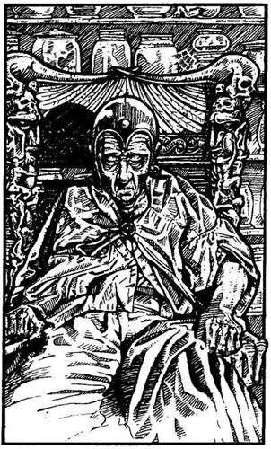
168.
A csapás összevissza kanyarog a fák között, majd egy fakunyhónál ér véget. Odaosonsz az ablakhoz, és belesel. Egy bíborruhás öregembert látsz, aki egy gazdagon faragott hintaszékben alszik. A háta mögötti polc csak úgy roskadozik a gyógyfüvekkel és különféle bogyókkal teli üvegektől. Ha bemész a kunyhóba - lapozz a 341-re. Ha inkább visszamész az ösvényen, és a völgyben mész tovább - lapozz a 205-re.
169.
Egy kiálló szikla alatt kicsinyke kunyhót pillantasz meg a hegyoldalban. Tetején vastagon áll a hó, az ereszről jégcsapok lógnak. Néhány mély lábnyomot veszel észre a hóban, melyek a kunyhóból vezetnek fel a hegyoldalba. Ha be akarsz menni a kunyhóba - lapozz a 36-ra. Ha inkább követed a lábnyomokat a hóban - lapozz a 190-re.
170.
Felkapaszkodsz a szurdok oldalán a barlang bejáratáig. Túl sötét van odabenn ahhoz, hogy bármit is láss, és nincs nálad mécses. Ha bekiáltasz abban a reményben, hogy talán a Gyógyító itt lakik - lapozz az 53-ra. Ha egyszerűen csak belépsz a barlangba - lapozz a 246-ra.
171.
A Hóboszorkány kincstárnoka halott, és így szabadon rendelkezhetsz a boszorkány vagyonával, bár az egészet képtelen vagy elvinni. Elhatározod, hogy megtöltöd a hátizsákodat arannyal - 600 Aranytallért találsz. De minden 50 Arany helyett ott kell hagynod valamit Felszerelési Tárgyaid közül,
mert nincs elég hely a hátizsákodban. Ne felejtsd el jelölni a változást a Kalandlapodon! Éppen befejezed a rámolást, amikor lépéseket hallasz; valaki futva közeledik a csarnok felé. Felállsz, kihúzod a kardodat, és nem vagy benne biztos, Vajon túlélsz-e egy újabb kemény harcot. Két alak jelenik meg az ajtóban: egy Törpe és egy Elf, de nem úgy néznek ki, mint akik meg akarnának támadni. Mindkettőjüknek széles vigyor ül az arcán, és mindketten egyszerre kezdenek el beszélni hozzád. Végül is az Elf lecsöndesíti a társát, és így szól: - Elpusztítottad! Szabadok vagyunk! Végre levehetjük az engedelmesség nyakláncát! Szeretnénk viszonozni valamivel jótettedet, ezért segítünk neked kijutni innen. Arra ugyanis, amerről jöttél, nem mehetsz ki, mert a Hóboszorkány hű csatlósai lesben állnak, hogy kifelé menet megöljenek. Különben is az alagutak csak úgy hemzsegnek a Goblinoktól. Elf és Törpe barátaink éppen velük csatáznak, hogy legyen időd a menekülésre - siess hát! - Legnagyobb meglepetésedre az Elf elindul az ajtóval szemközti fal felé, és átsétál rajta. - Ez is a Hóboszorkány egyik varázslata - jegyzi meg a Törpe. - Egy menekülési lehetőség, amit ő már sohasem fog használni. A baj csak az, hogy még mi sem jártunk erre. - A Törpe jót nevet magában, és elindul a fal felé, te pedig a nyomában. Keresztüllépsz a varázskijáraton, és egy fáklyával megvilágított szűk alagútban találod magad, melyen libasorban mentek végig. Hamarosan egy elágazáshoz értek és megálltok, hogy eldöntsétek, merre is menjetek tovább. Ha balra akarsz fordulni - lapozz a 61-re. Ha jobbra - lapozz a 388-ra.
172.
Ügyet sem vetve a hegy lábánál tátongó sötét barlangnyílásra, fölfelé indulsz a meredek hegyoldalban. Hirtelen egy sziklatömb, amelyben megkapaszkodtál, kilazul, és megcsúszol. Tedd próbára a SZERENCSÉDET! Ha SZERENCSÉD van - lapozz a 284-re. Ha nincs SZERENCSÉD, lezuhansz a Tűz-hegy szikláiról, és meghalsz.

173.
Stubb nemsokára visszatér: diót, zöldséget, gumókat és egy kövér nyulat hoz. Nekilát, hogy a csónakban talált serpenyőben valami finomságot készítsen nektek. Eközben Redswift a Sötét Elffel vívott küzdelméről mesél. Hamarosan nekiültök a lakomának, és a finom falatokat eszegetve különböző történeteket meséltek egymásnak, így próbálva feledni a Hóboszorkány szörnyű emlékét. Nyersz 4 ÉLETERŐ pontot! Később bemásztok a Sötét Elf csónakjába, és ellökitek magatokat a parttól. Csakhamar átértek a túlsó partra, ahonnan dél felé folytatjátok az utat, a Pogány-síkságon át Kőhidafalvára. Lapozz a 278-ra.
174.
Kísértést érzel, hogy megfordulj, és visszaindulj Big Jim Sun karavánjához, de a hírneved forog kockán. Így aztán nincs más választásod, mint hogy nekivágj a félelmetes útnak fel, a hegyek közé - lapozz a 169-re.

175.
Ash lövése remek: nyila a repülő Halálsólyom fejébe fúródik. A madár szárnya nem mozdul többé, és a ragadozó lezuhan a hegyoldalba. A domb túloldalán egy szurdok van, ahonnan Ash közli, hogy innen már egyedül kell továbbmenned, hogy megkeresd a Gyógyítót. Ash elmondja még, hogy a szurdokban addig menj keletnek, amíg egy sziklához nem érsz, melybe egy Főnix-fejet véstek. A Gyógyító ott lakik egy barlangban, éppen a főnixes szikla fölött. Megköszönöd Ashnek a segítségét, és búcsút véve tőle, leballagsz a szurdokba, ahol Ash tanácsának megfelelően keletnek fordulsz - lapozz a 252-re.

176.
Az ajtó egy újabb alagútra nyílik, és lassan kételkedni kezdesz, hogy vajon kijuttok-e valaha is a Hóboszorkány barlangjaiból. Redswiftre és Stubbra nézel, de nem veszed észre, hogy különösebben izgatná őket a dolog. Az alagút csakhamar egy újabb ajtóban ér véget, amelyből egy tőr áll ki. Ha ki akarod húzni a tőrt - lapozz az 55-re. Ha inkább kinyitod az ajtót - lapozz a 285-re.

177.
Kihúzod a dárdát a karodból, és futva menekülsz be az alagútba a csatlósok elől - lapozz a 137-re.
178.
A földre zuhansz, és bevered a fejedet egy kőbe. Ha sisak van a fejeden - lapozz a 324-re. Ha nincs rajtad sisak - lapozz a 129-re.
179.
A Gnóm nem akarja úgy végezni, mint a Neander-völgyi, és segítségért kiáltozva kirohan a barlangból. Ha átkutatod a szekrényeket, megkockáztatva, hogy a Gnóm esetleg erősítéssel tér vissza - lapozz a 194-re. Ha inkább azonnal elhagyod a barlangot, és elindulsz az alagúton balra - lapozz a 198-ra.
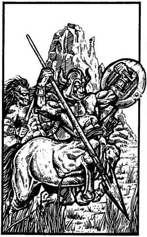
180.
A paták dobogása egyre erősebb lesz, és négy Kentaur tűnik fel a láthatáron. Mindegyik íjjal és nyílvesszőkkel teli tegezzel van felfegyverezve. Egy sorban megállnak előtted; éles szemük lesi minden mozdulatodat. Az egyik Kentaurnak, aki nyilván a vezérük, csúnya kék sebhely húzódik végig az arcán és a mellén; lándzsáját és pajzsát büszkén tartja kezében, fején szarvakkal díszített sisakot visel. Ha felajánlod nekik, hogy megfizeted, ha elvezetnek benneteket Kőhidafalvára - lapozz a 329-re. Ha csak váltasz velük néhány szót, és továbbmész - lapozz a 144-re.
181.
Mielőtt átjutnátok a túlpartra, a híd leszakad alattatok, és a folyóba zuhantok. Tedd próbára a SZERENCSÉDET! Ha SZERENCSÉD van - lapozz a 142-re. Ha nincs SZERENCSÉD - lapozz a 277-re.

182.
A törött ládához lépsz, hogy megvizsgáld a tartalmát: három díszes gyűrűt és egy repedt palackot találsz, melyből édeskés illat árad. Ha fel akarod húzni az ujjadra valamelyik gyűrűt - lapozz a 65-re. Ha inkább továbbmész a következő alagúton - lapozz a 338-ra.
183.
Amint a pajzshoz érsz, üvöltő szél söpör Végig az alagúton, és majdnem elsodor benneteket. Majd forgószél kerekedik, és mindent felszippantva az alagútban, ami csak az útjába kerül, feléd tart. Ha ismerős számodra a „Gul Sang abi Daar” varázsige - lapozz a 253-ra. Ha nem - lapozz a 66-ra.
184.
A Jégdémon a földre zuhan, és csak egy halom jég marad belőle. A Hóboszorkány csatlósai rémülten hátrálnak, mert azt hiszik, átszállt rád a Démon ereje. Nyersz 1 Szerencse pontot! Nyugodtan kisétálsz a barlangból - lapozz a 137-re.
185.
A Banshee nevű kísértet azt sikoltja feléd, hogy meg fogsz halni. Nem bírsz tovább ellenállni a kísértésnek, hogy elő ne rántsd a kardodat, hogy elhallgattasd.
Banshee ÜGYESSÉG 12 ÉLETERŐ 12
Minden Forduló előtt dobj két kockával! Ha az összeg ugyanannyi vagy kevesebb, mint ÜGYESSÉG pontjaid száma, akkor nem bénulsz meg a félelemtől, és harcolhatsz. Ha a dobott összeg nagyobb, mint ÜGYESSÉG pontjaid száma, automatikusan elveszted azt a Fordulót. Ha te nyersz - lapozz a 19-re.

186.
A villám eltalál, és ez iszonyatosan megvisel. A földre zuhansz. Vesztesz 1 ÜGYESSÉG és 4 ÉLETERŐ pontot! Ha még életben vagy - lapozz a 98-ra.
187.
Amint kihúzod a kardodat, a Gnóm ráparancsol a buta pofájú Neander-völgyire, hogy öljön meg. A Neander-völgyi felhorkan, és eltolva magától az asztalt, feláll. Felkap egy konyhakést, és pajzsként egy széket tartva maga elé, rád támad.
Neander-völgyi ÜGYESSÉG 7 ÉLETERŐ 8
Ha legyőzted, lapozz a 179-re.
188.
Egyik Goblin sem ereszti el a kötelet, így mindkettő fejjel lefelé a verembe zuhan. Csak az egyik tápászkodik fel, a másik fekve marad a jeges földön. A dühös Goblin övéből tőrt ránt elő, és neked ugrik. A szűk veremben puszta kézzel kell megvédened magad.
Goblin ÜGYESSÉG 5 ÉLETERŐ 4
Minden Fordulóban le kell vonnod 3 pontot a Támadóerődből, mert nem karddal harcolsz. Ha legyőzted - lapozz a 366-ra.
189.
Az Agypusztító undorító csápjai őrjöngve kígyóznak, amint megpróbálnak köréd tekeredni. Szerencsére az amulett megsegít, és ellen tudsz állni a
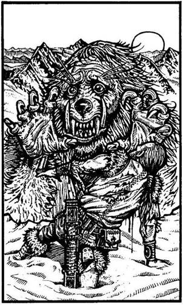
szörny hipnotikus támadásának. Előrántod a kardodat, és rátámadsz az undorító teremtményre, mely elereszti Redswiftet és Stubbot. Félholtan zuhannak a földre.
Agypusztító ÜGYESSÉG 10 ÉLETERŐ 10
Ha legyőzted - lapozz a 309-re.
190.
A nagy magasság és a ritka levegő miatt zihálsz, miközben fölfelé mászol. Vesztesz 1 ÉLETERŐ pontot! Hirtelen sikolyt hallasz, amit vérszomjas üvöltés követ. Nem messze tőled egy prémvadászt pillantasz meg, aki élethalálharcot vív egy óriási medveszerű állattal. Az állatot hosszú fehér szőr borítja, és tűhegyes fogai vannak. Ez az a gyilkos fenevad, akit keresel - ez a Yeti. Hatalmas karmaival megragadja a szerencsétlen prémvadászt, aki arccal a hóba zuhan. Feldühödve a szörny kegyetlenségén felordítasz, és a Yetire veted magad. Lapozz a 77-re.

191.
Túl gyenge vagy már, hogy felhúzódzkodj az indán, és már tartani sem bírod magad. Vagy tíz métert zuhansz fejjel lefelé. Egy halom koszos csontra esel. Kábán fekszel, moccanni sem bírsz, amikor több száz Húsevő Lárva araszol elő, hogy belőled lakmározzanak. Kalandod itt véget ér!
192.
Már éppen menni készülsz, amikor fegyvereket veszel észre az ágy alatt. Ha néhányat magaddal akarsz vinni közülük - lapozz a 255-re. Ha nem akarsz felesleges terhet cipelni, és inkább továbbmész nélkülük - lapozz a 263-ra.
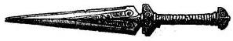
193.
Gyorsan a földre veted magad, és látod, amint a villám a fejed fölött átcikázva a barlang falába csapódik. Lapozz a 336-ra.
194.
A szekrények tele vannak lábasokkal, serpenyőkkel, tálakkal és kanalakkal. Az egyik szekrény azonban zárva van, és a kardoddal kell kifeszítened az ajtaját. A Gnóm személyes holmiját találod benne: egy ezüstfurulyát, egy rovásírással díszített botot, melyre kék és sárga karikákat festettek, egy elszáradt rózsát és egy régi, bőrkötéses könyvet, melynek címe: A Varangyok titkai. Mit teszel?
Belefújsz a furulyába? Lapozz a 74-re.
Elolvasod a boton lévő
rovásírást? Lapozz a 345-re.
Megszagolod a rózsát? Lapozz a 317-re.
Elolvasod a könyvet? Lapozz a 356-ra.
Nem nyúlsz semmihez, hanem visszamész
az alagútba? Lapozz a 198-ra.
195.
Kezed teljesen elgémberedett, és iszonyatosan sajog a fájdalomtól, így aztán képtelen vagy megfogni a lándzsát. Szitkozódva belehajítod a hóba, a másik kezeddel pedig előrántod a kardodat, hogy azzal küzdj meg a hatalmas fehér vadállattal.
Yeti ÜGYESSÉG 11 ÉLETERŐ 12
Ha legyőzöd - lapozz a 67-re.
196.
Stubb húzza a rövidebbet, és balszerencséjét átkozva nyúl a fogantyúhoz. Amikor hozzáért, az életre kel. Egy Áspiskígyó tekeredik Stubb csuklója köré, és még mielőtt lerázhatná, az belemélyeszti a méregfogát. A Törpe térdre rogy, és a szabadon maradt kezével megpróbálja kiszabadítani a csuklóját. Redswift késével gyorsan kivágja testéből a mérgezett részt, és hála a Törpék erős szervezetének, Stubb gyorsan rendbe jön, és képes folytatni az utat. Lapozz a 20-ra.
197.
Fejjel zuhansz a szakadékba, és igencsak megütöd magad, amikor a jeges földön landolsz. Dobj egy kockával! A kapott pontszámot vond le ÉLETERŐ pontjaid számából. Kardoddal kapaszkodókat vájva felmászol a szakadék széléig. A süppedő, mély hóban vonszolva magad folytatod az utadat - lapozz a 212-re.
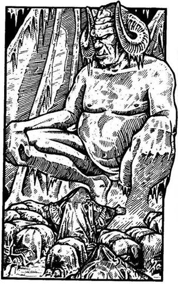
198.
A távolból énekhangokat hallasz; az alagút rövidesen egy barlangterembe torkollik. Egy hatalmas Jégdémont pillantasz meg, mely előtt a Hóboszorkány tíz csatlósa éppen imádattal borul le. A barlangból két kijárat vezet tovább: az egyik balra, a másik jobbra. Ha köpeny van rajtad - lapozz a 384-re. Ha nincs rajtad köpeny - lapozz a 260-ra.

199.
Miután végeztél a Vérfarkassal, már nem tudsz újra elaludni. Boldogan veszed át Stubbtól az őrséget. Az éjszaka hátralévő része békésen telik el, és reggel továbbindultok Kőhidafalva felé. Lapozz a 13-ra.
200.
Valószínűleg a Zombi őrizte azt a raktárszobát, ahová az ajtó nyílik. Különböző alakú és nagyságú korsók és palackok sorakoznak a polcokon, a padlón pedig ládák és hordók állnak. Gyorsan átkutatod a szobát, de nem találsz túl sok érdekeset benne, kivéve egy köcsög őrölt Minótaurosz-szarvat, néhány szem fokhagymát, egy fogakkal teli dobozt, egy köcsögben pácolt gyíkfarkakat és négy nagy sárkánytojást. Mivel nem tudsz mindent egyszerre beletenni a hátizsákodba, csak három
dolgot vihetsz magaddal. (Jelöld a Kalandlapodon!) Kimész a szobából, visszajutsz a kereszteződéshez, aztán egyenesen folytatod az utadat az alagútban - lapozz a 150-re.
201.
Észreveszel egy behajló ágat; amit sikerül elkapnod. Ha van nálad pajzs, azt most beleejted a folyóba (vesztesz 1 ÜGYESSÉG pontot), de sikerül megmenekülnöd. Minden erődet összeszedve átjutsz a déli partra. Úgy érzed, teljesen kimerültél. Vesztesz 2 ÉLETERŐ pontot! A Hóboszorkányt átkozva visszafordulsz keletnek, ahol a tüzet láttad lobogni. Lapozz az 50-re.
202.
Átlépsz a Farkasok teteme fölött, és a sűrű hóesésben folytatod az utadat. A terep egyre meredekebb lesz, és egyre lassabban haladsz. Lapozz a 337-re.
203.
Stubb nyer, és örömében felnevet. Lerúgja a lábáról a régi csizmáját, és felhúzza a varázserejű Elf-csizmát. Hogy kipróbálja, nagyokat ugrik a kőpadlón, de csizmája nem csap zajt! Új szerzeményével a lábán türelmetlenül indul el a következő alagút felé. Redswift és te követitek. Lapozz a 20-ra.
204.
Az Elf a földre zuhan, és a csuklyája hátraesik. Egy fémláncot látsz a nyakában, mely fénylik a félhomályban. Ez az engedelmesség nyaklánca - hörgi fájdalomtól elfúló hangon. - A Hóboszorkány
ezzel kényszerít rá minket, hogy a parancsait teljesítsük. Ha én meghalok, a lánc elveszti erejét, de a boszorkány tudomást szerez róla, és ideküldi az embereit, hogy derítsék ki, mi történt. Az Elfek, kiváltképp mi, Hegyi Elfek, soha nem szolgálnánk ezt a gonosz boszorkányt a saját akaratunkból. Öld meg őt, és szabadíts ki minket! Nem haragszom rád, amiért megtámadtál, nem volt más választásod. Vedd a köpenyem, ezzel álcázd magad. Kövesd ezt az alagutat egészen az elágazásig, s ott fordulj jobbra. Most pedig pihennem kell. - Fölveszed az Elf köpenyét, őt magát meg lefekteted, amilyen kényelmesen csak lehet. Kezet rázol vele, és elindulsz az alagútban - lapozz a 136-ra.

205.
A folyó túlpartján, a fák és a sziklák között egy tisztást pillantasz meg. Nyílt tűzön sül valami, látod a felszálló füstöt, de a tűz körül nem látsz egy teremtett lelket sem. Lehet, hogy ők előbb vettek észre, és elbújtak? A folyó itt elég keskeny, és meglehetősen sebes folyású. Jókora kövek állnak ki a vízből, és úgy gondolod, hogy ezeken átugrálva átkelhetsz a túlpartra. Ha át akarsz menni rajtuk - lapozz a 268-ra. Ha inkább továbbmész a völgyben - lapozz a 115-re.
206.
A Gyógyító aggódva néz rád, és így szól: - Nincs más választásod, mint hogy gyalog menj a Tűz-hegyig, és egyedül mássz fel a tetejére. Most búcsút kell vennünk egymástól. Sok szerencsét, remélem, sikerrel jársz! - Megszorítod a Gyógyító kezét, és köszönetet mondasz a segítségéért, majd búcsút intesz neki, és kipréseled magad a sziklarepedésen, a napvilágra. Tudod, hogy a Halálvarázslat ereje egy időre megszűnt, ezért sietve indulsz el északnak. Már közel jársz a hegy lábához, amikor egy undorító külsejű teremtmény ugrik eléd egy szikla mögül, és rád támad. Meg kell küzdened vele!
Hobgoblin ÜGYESSÉG 6 ÉLETERŐ 7
Ha legyőzted - lapozz a 172-re.

207.
Az alagút élesen balra kanyarodik. Amikor befordultok a sarkon, a földön megpillantasz valamit, ami szikrázva csillog a halvány fényben. Lehajolsz, és egy kis fémkorongot veszel fel a földről. Úgy gondolod, még hasznát veheted, és zsebre teszed.
Nem sokkal később az alagút ismét élesen balra fordul, és rövidesen egy elágazásba torkollik. Rövid tanácskozás után úgy döntötök, hogy jobbra indultok tovább - lapozz a 259-re.
208.
Amikor a Hegyi Elf a földre rogy, a nyakában lévő különös fémlánc megszűnik fényleni. Nem tudod mire vélni a dolgot, és úgy döntesz, hogy sietve továbbmész az alagútban - lapozz a 241-re.

209.
Nagyon betegnek érzed magad, kifekszel a napra, és hamarosan álomba merülsz. Egy óra múlva felébredsz, de semmivel sem érzed magad jobban - valójában rosszabbul vagy. Rádöbbensz, hogy az öreg, aki a gyógyfüveket eladta neked, nem a Gyógyító volt, csak egy csaló sarlatán. Az egy óra, amit erre a hamis orvosságra pazaroltál, drága fizetség. Vesztesz 3 ÉLETERŐ pontot! Ha vissza akarsz menni a kuruzsló kunyhójába - lapozz a 27-re. Ha inkább úgy döntesz, hogy nem vesztegeted vele az idődet, és továbbmész a völgyben - lapozz a 205-re.

210.
A Hóboszorkány visszahőköl a fokhagymától, és így időt nyersz. Tudod, hogy egy Vámpírt csak úgy lehet megölni, ha egy karóval átdöfik a szívét. Ha van nálad egy rovásírással ékesített bot - lapozz a 34-re. Ha nincs - lapozz a 10-re.

211.
Stubbot a bosszúvágy hajtja, és gyorsan legyőzi a két Dombi Trollt, majd segít Redswiftnek a másvilágra küldeni a másik kettőt. Nem vesztegeti az időt azzal, hogy átkutassa a Trollok holmiját, hanem azonnal útra kel Kőhidafalvára. Követitek őt a faluba, ahol régi barátai köszöntik. Hamarosan kiderül, hogy a Törpék nagy bajban vannak. Bár
tudják, hogy a Dombi Trollok azért gyülekeznek, hogy megtámadják a falujukat, nincs erejük hozzá, hogy megvédjék magukat, mióta híres harci kalapácsukat ellopták Gillibran királytól. Stubb aggódik a kedvüket vesztett Törpékért, és elvisz benneteket egy fogadóba, hogy megismerkedjetek a barátjával, Nagylábbal. Nagylábtól megtudja, hogy egy sas lopta el a kalapácsot, de a Sötét Erdő fölött elejtette. - Meg kell találnunk! Nagyláb, azonnal indulnunk kell! - kiáltja Stubb, feledve saját baját. Feláll, és kezet nyújt nektek. - Sajnálom, barátaim - mondja -‚ de nem tudlak vendégül látni benneteket. Remélem, megértitek! - Aztán kimegy a fogadóból Nagylábbal együtt, és még egy utolsó pillantást vetsz az öreg Törpére. Redswift felsóhajt, és azt tanácsolja, hogy azonnal induljatok útnak a Holdkő-dombok felé. Mellesleg közli, hogy valamit el kell neked mondania, és bizonyos szempontból jó is, hogy Stubb nincs itt, és nem hallja. Szöget üt a fejetekbe, vajon mit akarhat mondani Redswift, és ezen töprengtek, miközben továbbhaladtok Kőhidafalváról keletre, a Vörös-folyó mentén. Amíg a Dombi Trollok őrjáratát kémlelitek, ugyanez jár a fejetekben. A fák között megbújva Redswift hirtelen észrevesz három Dombi Trollt, amint a fegyvereiket élesítik egy kövön. Tedd próbára a SZERENCSÉDET! Ha SZERENCSÉD van - lapozz a 218-ra. Ha nincs SZERENCSÉD - lapozz a 296-ra.

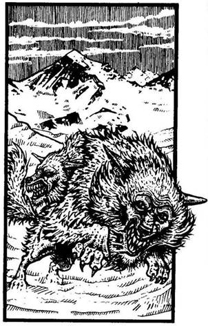
212.
A szél süvíteni kezd, és a felkavart havat az arcodba fújja. Leszegett fejjel mész tovább. A szél üvöltésén kívül hirtelen egy másik hangra leszel figyelmes - farkasokéra. Előhúzod a kardodat, és a gomolygó hófüggönyön keresztül kémleled a terepet. Mintha csak a semmiből bukkantak volna elő, két Hófarkas terem előtted, készen arra, hogy rád vesse magát. Teljesen fehérek, kivéve vérvörös szemüket. Az egyik hirtelen rád ugrik. Küzdj meg velük egyenként.
ÜGYESSÉG ÉLETERŐ
Első Hófarkas 8 7
Második Hófarkas 7 7
Ha legyőzted őket, lapozz a 202-re.
213.
Mikor magadhoz térsz, látod, hogy Redswift és Stubb ájultan hevernek melletted a földön. Az Agypusztítónak nyomát sem látod. Mikor megpróbálsz felülni, nagyot nyögsz, olyan éles fájdalom hasít a fejedbe. Végül két társad is magához tér, szemmel láthatóan ők is szenvednek. Elmesélik, hogy az Agypusztító behúzta őket a barlangba, és nekik sem volt elég erejük ahhoz, hogy ellenálljanak neki. Körülkémlelsz a barlangban, és a falmélyedésben észreveszel a túlsó oldalon egy ajtót, valamint két agyagedényt, egy pirosat meg egy szürkét. Mit teszel?
Kinyitod az ajtót? Lapozz a 176-ra.
Belenézel a piros edénybe? Lapozz a 101-re.
Belenézel a szürke edénybe? Lapozz a 344-re.
214.
Amint belépsz az alagútba, egy vasrács zuhan le mögötted, és elzárja a visszautat. A férfi hangosan felnevet, és így szól: - Bolond voltál, hogy azt hitted, könnyű becsapni engem, amikor bárki láthatja, hogy nem viseled az engedelmesség nyakláncát! Most csapdába estél! - Nem tudsz mit tenni, csupán annyit, hogy megnézed, mi van az alagút végében. Lapozz a 323-ra.
215.
Az alagút egy kis barlangban ér véget, melyben csupán egy réztálat találsz egy jégtömb tetején. A tálban sárga színű folyadék van, és egy fából készült merőkanál. Ha iszol a folyadékból - lapozz a 24-re. Ha nem iszol, és elhagyod a barlangot - lapozz az 56-ra.

216.
Gyorsan fogod a parittyádat, és megcélozod a gömböt. Dobj két kockával! Ha az összeg ugyanannyi vagy kevesebb, mint ÜGYESSÉG pontjaid száma - lapozz a 282-re. Ha a kapott összeg nagyobb, mint ÜGYESSÉG pontjaid száma - lapozz a 375-re.

217.
A vörös levelek édeskés illatot árasztanak körülötted, amit igen kellemesnek találsz. Kipihented magad, de hirtelen úgy érzed, alig bírod nyitva tartani a szemedet, bár még csak kora reggel van. Nem vetted észre, hogy az Altatófűre feküdtél. Mély álomba merülsz. Leszáll az éj, és az idő egyre múlik, de te még mindig csak alszol. A hold lassan keresztülvándorol a tiszta éjszakai égen, és már csak néhány perc van hajnalig. Egy fura látomás zavarja meg az álmodat, amit nem tudsz megfejteni. A látomás egyre nő, míg végül semmi mást nem látsz, csak egy hosszú csőrű, díszes tollú madarat, mely lángok közül próbál meg felszállni. A Gyógyító megpróbál fölébreszteni. Ha képes vagy összpontosítani és az emlékezetedbe idézni a madár nevét, mely a Gyógyító hatalmának a jelképe, akkor véget érnek álmaid, és felébredsz. Ha úgy emlékszel, hogy a madár egy Főnix - lapozz a 146-ra. Ha szerinted a madár egy Griff - lapozz a 228-ra.

218.
A Dombi Trollok nem látnak meg benneteket, így észrevétlenül elmehettek mellettük - lapozz a 38-ra.
219.
A lándzsa átszeli a levegőt, és a Yeti bozontos mellkasába fúródik. Felüvölt fájdalmában, de nem terül el. Kardot rántasz, hogy megküzdj a felbőszült vadállattal.
Yeti ÜGYESSÉG 10 ÉLETERŐ 9
Ha legyőzöd, lapozz a 67-re.

220.
Óvatosan lépkedtek a lábnyomok között, számítva rá, hogy bármelyik pillanatban bekövetkezhet valamilyen szerencsétlenség. Ez ugyan nem következik be mindaddig, amíg Stubb el nem tüsszenti magát. Dobj egy kockával! Ha 1-et vagy 2-t dobsz - lapozz a 94-re; ha 3-at vagy 4-et dobsz - lapozz a 326-ra; ha 5-öt vagy 6-ot dobsz - lapozz a 107-re.

221.
Az alagút éles kanyart vesz jobbra, majd egy barlangban ér véget, ahonnan lágy zene hangjai szűrődnek ki. A barlang bejáratát egy szakadt állatbőr fedi, de alatta be lehet látni. Azt, aki bent van, azt csak deréktól lefelé látod: lilás-zöld nadrág és csúcsos orrú piros papucs van a lábán. Ha az állatbőrt félrehúzod és belépsz - lapozz a 303-ra. Ha inkább továbbmész az alagútban - lapozz a 111-re.

222.
Nagy nehezen felkapaszkodsz, és kimászol a veremből, de néhány Húsevő Lárva már beette magát a testedbe. Dobj egy kockával, hogy megtudd, hány Lárva támadott meg. Mindegyik Lárva után egy ÉLETERŐ pont levonás jár. Ha még élsz - lapozz a 242-re.


223.
A lény pillanatokon belül fölötted tornyosul, bőrét most fehér hüllőpikkelyek borítják. Nyaka megvastagszik, hogy elbírja a füstölgő orrlyukú óriási fejet; hátán pedig szárnyak nőnek. Egy ősöreg Fehér Sárkány áll előtted. Ha van egy rézgyűrű az ujjadon - lapozz a 313-ra. Ha nincs, meg kell küzdened ezzel a hatalmas szörnnyel.
Fehér Sárkány ÜGYESSÉG 12 ÉLETERŐ 14
A szokásos támadáson kívül jeges leheletével is támad, ezért minden Fordulóban külön kell még egy kockával dobnod! Ha 1-et vagy 2-t dobsz, és nem viselsz aranygyűrűt - vesztesz plusz 2 ÉLETERŐ pontot. Ha 3 és 6 között dobsz - a Sárkány lehelete célt téveszt. Ha legyőzöd - lapozz a 139-re.

224.
Amint elkezded olvasni a tekercset, az írás elhalványodik. Dobj két kockával! Ha a kapott összeg ugyanannyi vagy kevesebb, mint ÜGYESSÉG pontjaid száma - lapozz a 147-re. Ha a kapott összeg nagyobb, mint ÜGYESSÉG pontjaidnak a száma - lapozz a 396-ra.
225.
A hóvihar nagyon megviselt. Kardforgató kezed teljesen elfagyott, és igencsak legyengültél. Ezentúl a másik kezeddel kell majd harcolnod. Vesztesz 2 ÜGYESSÉG és 4 ÉLETERŐ pontot! Ha még életben vagy - lapozz a 174-re.

226.
A dárda is és a korbács is célt téveszt, így sikerül átrohannod az alagúton - lapozz a 137-re.
227.
A Sötét Elf kiváló céllövő. A nyílvessző a válladba fúródik, és fájdalmadban felordítasz. Vesztesz 2 ÉLETERŐ pontot! Stubb gyorsan az evezőlapátokhoz ül, és továbbevez a túlsó part felé. Még mindig lőtávolságban vagytok. A Sötét Elf újabb nyilat vesz elő, és ismét lő. Tedd próbára a SZERENCSÉDET! Ha SZERENCSÉD van - lapozz a 32-re. Ha nincs SZERENCSÉD - lapozz a 239-re.

228.
A madár képe eltűnik, és ismét kusza álmok tódulnak eléd. Sajnos nem ismered föl a mesebeli lényt, melyet a Gyógyító úgy tisztel, ezért úgy dönt, hogy nem vagy már méltó a segítségére. Pirkad, de te még mindig mélyen alszol. Elszállt a lehetőség, hogy megtörd a Halálvarázslatot. Gyönyörű nap virrad fel, de te ezt már nem láthatod. A Tűz-hegy mindig éhes keselyűi ismét jóllaknak majd…

229.
A hőmérséklet jóval fagypont alatt van, és az üvöltő hóviharban teljesen átfagysz. Felőrli energiáidat a küzdelem, hogy továbbjuss a heves hózáporban. Vesztesz 2 ÉLETERŐ pontot! Ha még mindig tovább akarsz menni - lapozz a 387-re. Ha kardoddal inkább egy gödröt ásol magadnak, ahol elrejtőzhetsz - lapozz a 281-re.

230.
A víz eléggé ártalmatlannak látszik, de semmi kedved átfázni. A fejed fölé emeled a pajzsodat, és átsétálsz a lágyan alázúduló vízesés alatt. Pajzsodat visszadobod a társaidnak, hogy ők is használhassák. Nemsokára ismét együtt folytatjátok tovább az utat. Lapozz a 339-re.

231.
Mire a dombtetőre érsz, már erősen lihegsz. Vesztesz 1 ÉLETERŐ pontot! Teljesen kimerülve megállsz és körülnézel. A domb aljában egy szurdokot látsz kelet-nyugati irányban húzódni. Lassan lesétálsz, és úgy döntesz, hogy a szurdokban balra fordulsz. A bal oldali sziklafal közepe táján hamarosan egy barlangnyílást veszel észre. Ha felmászol, hogy megnézd - lapozz a 170-re. Ha inkább továbbmész - lapozz a 377-re.

232.
Az Illuzionista felsikolt a fájdalomtól, amikor kardod az oldalába vág. Amint a földre zuhan, a két képmás eltűnik. Odalépsz hozzá, s ekkor nevetve feláll: sebe teljesen begyógyult! Ha újra bele akarod döfni a kardodat - lapozz a 261-re. Ha megpróbálod szétzúzni a kristályt - lapozz a 72-re.
233.
A vezér megfontoltan bólint. Elhiszi a mesédet, és továbbot int a csapatának. Nézitek őket, amint elügetnek, és megkönnyebbülve folytatjátok utatokat Kőhidafalva felé. Lapozz a 278-ra.

234.
Tőröddel megcélozod a két vasrúd között lévő fagombot. Tedd próbára a SZERENCSÉDET! Ha SZERENCSÉD van - lapozz a 120-ra. Ha nincs SZERENCSÉD - lapozz a 132-re.

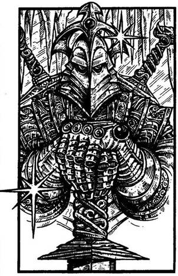
235.
A jégfalba befagyva egy arannyal és ékszerekkel teli nyitott ládát látsz. Addig bontod a jégfalat, míg eléred a ládát. Először egy kis aranyszobrocskát veszel ki belőle, mely hirtelen kiugrik a kezedből, és nőni kezd. A szemed előtt változik át aranyharcossá, akit a kincs őrzésére hagytak hátra.
Aranyőr ÜGYESSÉG 9 ÉLETERŐ 9
Ha legyőzöd - lapozz a 171-re.
236.
Bár minden erejüket latba vetik, barátaid mégsem bírják a kezedet az ajtóhoz erőltetni. A tőr ismét a hatalmába kerít, és ezúttal az oldaladba döföd. Vesztesz 1 ÜGYESSÉG és 4 ÉLETERŐ pontot. Ha még mindig életben vagy, barátaid megpróbálják visszanyomni a tőrt az ajtóba. Tedd próbára a SZERENCSÉDET! Ha SZERENCSÉD van - lapozz a 6-ra. Ha nincs SZERENCSÉD - lapozz a 35-re.

237.
Erősen megragadod a kard markolatát, és rántasz egyet rajta. Villámgyorsan kipattan a hüvelyéből. A Gyorsaság Kardját találtad meg, egy szinte súlytalan, mégis erős és éles fegyvert. Nyersz
1 ÜGYESSÉG pontot! Ha át akarod kutatni az Ork hátizsákját - lapozz a 354-re. Ha inkább továbbmész a szemben lévő alagúton - lapozz a 221-re.
238.
Ash épp hogy csak elvéti a Halálsólymot. Mielőtt újra lőne, a Halálsólyom rád támad.
Halálsólyom ÜGYESSÉG 4 ÉLETERŐ 5
Ha túlélsz két Fordulót - lapozz a 105-re.
239.
A Sötét Elf távolra is ragyogóan céloz. Nyila a combodba fúródik. Vesztesz 2 ÉLETERŐ pontot! Szerencsére Stubb megszállottként evez, és így eléritek a túlsó partot, még mielőtt a Sötét Elf újra lőne. Kiugrotok a csónakból, fügét mutatsz a Sötét Elfnek, és délre indultok a Pogány-síkságon keresztül Kőhidafalva felé - lapozz a 278-ra.

240.
Épp hogy csak sikerül elugranod a feléd hajított tőr elől. Terpeszállásban várod, hogy puszta kézzel megvívj a föltüzelt Goblinnal.
Goblin ÜGYESSÉG 5 ÉLETERŐ 5
Minden Fordulóban vonj le 3-at a Támadóerődből, mivel nincs nálad a kardod. Ha te győzöl, lapozz a 43-ra.

241.
Az alagútban egy elágazáshoz érsz, és döntened kell, vajon merre is menj. A jobb oldali alagútból futó léptek zaját hallod. Ha elrohansz balra - lapozz a 321-re. Ha inkább a jobb oldali alagúton indulsz el, hogy szembenézz az arról jövő ismeretlennel, bárki legyen is az - lapozz a 145-re.

242.
Kiszedegeted az undorító Lárvákat a testedből, és eltaposod őket. Rájössz, hogy a Gyógyító nem a fa üregében lakik. Elindulsz fölfelé a folyóvölgyben. Lapozz a 119-re.

243.
Vársz, amíg a Fagyóriás hátat fordít neked, és ekkor átrohansz a barlangján. Mielőtt a lassú mozgású óriás észrevenné, hogy mi történik, már a következő alagútban vagy. Fuss, ahogy csak tudsz. Lapozz a 338-ra.
244.
Mielőtt kardoddal eltalálnád a gömböt, abból egy fehér fénynyaláb csap ki, és lefogja fegyveredet. Égető fájdalom fut végig a karodon, és a Hóboszorkányból, látva sikertelen kísérletedet, hogy legyőzd őt, kitör a nevetés. Képtelen vagy elengedni kardod markolatát, és térdre rogysz az egyre erősödő fájdalomtól. Minden elsötétül a szemed előtt, és soha többé nem térsz magadhoz. Kalandod itt véget ér.

245.
Mindkét tőr elszáll a fejed mellett. Nyersz 1 Szerencse pontot! Hátra sem nézve továbbrohansz. Lapozz a 29-re.

246.
A barlangban olyan sötét van, hogy az orrodig sem látsz. Ahogy vakon botorkálsz előre, megbotlasz és elesel. Tedd próbára a SZERENCSÉDET! Ha SZERENCSÉD van - lapozz a 133-ra. Ha nincs SZERENCSÉD - lapozz a 178-ra.
247.
Kettétöröd a cipót, és legnagyobb meglepetésedre egy kis vaskulcsot találsz benne. Nyersz 1 Szerencse pontot! Zsebre teszed a kulcsot, és úgy döntesz, hogy mégsem eszel a kenyérből. Továbbmész a szemközti alagúton. Lapozz a 221-re.
248.
Mikor visszanyered az eszméletedet, Redswift és Stubb éppen a sebeidet látja el. - Előre megmondtam - mondja Redswift gúnyosan. Megpróbálsz lábra állni, de minden tagod sajog. - Itt mindenképpen meg kell állnunk pihenni - mondja Stubb eléggé gondterhelt ábrázattal -‚ de a Hóboszorkány Goblinjai egykettőre itt lesznek. - Nincs mit tenned, feküdnöd kell. Tedd próbára a SZERENCSÉDET! Ha SZERENCSÉD van - lapozz a 28-ra. Ha nincs SZERENCSÉD - lapozz a 332-re.
249.
Keményen megragadod a lándzsa nyelét, megcélozod vele a Yetit. Dobj egy kockával! Ha 1-et dobtál - lapozz a 157-re. Ha 2-t vagy annál többet dobtál - lapozz a 219-re.

250.
Megragadod a lándzsa nyelét, és teljes erőből megrántod, de ez nem jön ki. Hirtelen borzalmas látomások kezdenek gyötörni, és a rémülettől felsikoltasz. Elereszted a lándzsát, de a látomások csak nem szűnnek. Vesztesz 1 ÜGYESSÉG pontot! Ha átkutatod az Ork hátizsákját - lapozz a 354-re. Ha inkább továbbmész a szemközti alagúton - lapozz a 221-re.

251.
Csak két órája, hogy lefeküdtetek, amikor hirtelen vérfagyasztó üvöltésre ébredsz. Redswift gyorsan feléleszti a tüzet, Stubb pedig harcra készen
melléd ugrik. Egy gally reccsen mögötted, megfordulsz, és egy hatalmas fenevadat pillantasz meg, mely épp arra készül, hogy rád vesse magát. Hosszú szőre és hegyes fogai megcsillannak a tűz fényénél - egy Vérfarkas áll veled szemben! Meg kell küzdened vele!
Vérfarkas ÜGYESSÉG 8 ÉLETERŐ 10
Ha legyőzöd - lapozz a 199-re.
252.
Balra egy fáról lelógó kötélhágcsót pillantasz meg. Amikor felnézel, az ágak között elrejtve egy fakunyhót veszel észre. Ha föl akarsz mászni a kötélhágcsón a viskóhoz - lapozz a 398-ra. Ha inkább továbbmész a szurdokban - lapozz a 92-re.

253.
A pajzsot fölvéve, egy Levegő Elemet szabadítottál el. Szerencsére még emlékszel a tekercsre írt szavakra, és halkan elmormolod őket, miközben az örvénylő forgószél végigsöpör az alagúton. Az, amilyen gyorsan jött, úgy el is tűnik, és minden újra csendes és nyugodt lesz körülötted. Karodra csatolod a pajzsot (nyersz 1 ÜGYESSÉG pontot), és elindultok visszafelé az alagúton az utolsó kereszteződéshez. Lapozz a 135-re.
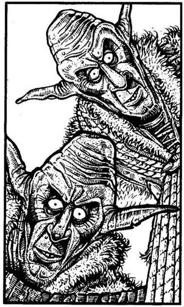
254.
A fájdalomtól felnyögsz, és megpróbálsz felállni. Amikor fölpillantasz, hogy megnézd, mekkorát zuhantál, két ronda alakot veszel észre, amint rád bámulnak a magasból. A Goblinok egy kötelet eresztenek le neked, de közben rád parancsolnak, hogy dobd fel nekik a kardodat, mielőtt felmásznál. Csapdában vagy, tehát nincs sok választásod; nem szívesen bár, de azt teszed, amit mondanak neked. Mielőtt mászni kezdenél felfelé, észreveszed, hogy mindkét Goblin fogja a kötél végét. Ha felmászol hozzájuk - lapozz a 276-ra. Ha inkább erősen megrántod a kötelet, és megpróbálod a Goblinokat lerántani a gödörbe - lapozz a 314-re.
255.
Magadhoz veszel egy harci kalapácsot és egy lándzsát, mielőtt kimennél a kunyhóból - lapozz a 263-ra.
256.
Épp jókor rántod elő a kardodat, hogy megvédd magad a Madáremberrel szemben. Az egy kissé távolabb röppen, majd újra támad.
Madárember ÜGYESSÉG 12 ÉLETERŐ 8
Ha legyőzted - lapozz a 18-ra.
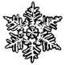
257.
Lefelé gurulsz a hegyoldalban, de a lavina hirtelen megreked egy vízmosásban. Szerencsére a lavina nem temetett maga alá. Bár kissé kába vagy, fel tudsz ülni. Vesztesz 1 ÜGYESSÉG pontot! Felállsz, és szédelegve fölfelé indulsz a hegyoldalban - lapozz a 363-ra.

258.
A Gyógyító odalép hozzád, kezét a homlokodra teszi, és néhány különös szót mormol. Aztán hátralép, és így szól: - A folyamat visszafordításának további részei sem veszélytelenek, de a kockázatot csökkenthetjük, ha van néhány dolog a birtokodban. Mostantól kezdve én már nem igazán tudok neked segíteni, mivel egyedül kell elmenned egy bizonyos helyre, hogy megtörd a Halálvarázslatot. Kérlek, kövess! - A Gyógyító elindul a barlang belseje felé, és egy gödör széléhez vezet. A sötétben meresztgeted a szemedet, hogy láss valamit. - Egy fatörzs visz át a verem fölött - kezdi a Gyógyító -‚ azon kell átmenned, hogy bejuss a barlangba. Természetesen könnyebb lenne átkelned, ha látnál. Nincs nálad véletlenül egy gyertya? - Ha van nálad gyertya és tűzszerszám - lapozz az 54-re. Ha nincs - lapozz a 343-ra.
259.
Az alagút bal oldali falának tövében egy nagy, vasból készült ékszeres ládikót vesztek észre. A fogantyúja sárgarézből készült és kígyó alakú. Egyikőtök sem vállalkozik rá önként, hogy kinyissa a ládát, így 2 egyforma és egy rövidebb bottal sorsot húztok. Dobj egy kockával! Ha 1-et vagy 2-t dobsz - lapozz a 73-ra. Ha 3-at vagy 4-et - lapozz a 196-ra. Ha 5-öt vagy 6-ot dobsz - lapozz a 353-ra.
260.
Nagy levegőt veszel, és feltűnés nélkül elindulsz a barlangon keresztül a jobb oldali folyosó felé. Lapozz a 370-re.

261.
Az Illuzionista még csak meg sem próbál védekezni lesújtó kardod ellen. De a kard, ahelyett hogy az Illuzionistát találná el, egy láthatatlan falba ütközik, és darabokra törik. Mindössze a markolat és a penge csonkja marad a kezedben. Vesztesz 1 ÜGYESSÉG és 1 Szerencse pontot. Nincs más lehetőséged, meg kell próbálnod elvenni hatalmának forrását - a kristályt. Lapozz a 72-re.
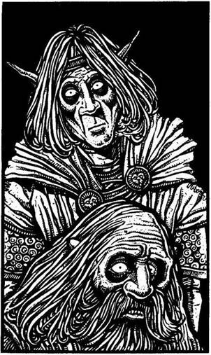
262.
Miközben megpróbálsz felállni, a Hóboszorkány Redswiftre és Stubbra összpontosítja az erejét. A fémlánc a nyakukra szorul, fuldokolva próbálnak megszabadulni tőle. Nagy nehezen lábra állsz, s közben átkokat szórsz a Hóboszorkányra, amiért az csak védtelen rabszolgákkal mer ujjat húzni. Párviadalra hívod ki az általa választott fegyvernemben. Nevetve válaszol: - Bár már legyőztelek, mégis szeretek játszadozni, hát játsszunk! - Abbahagyja Redswift és Stubb fojtogatását, és elhallgat; nyilván valami ördögi játékon töri a fejét. Hirtelen csoszogó léptek közeledő zaja üti meg a füledet. Egy Elf és egy Törpe lép be a barlangba a szemközti alagútból. Majdnem pontosan ugyanúgy néznek ki, mint Redswift és Stubb, a különbség csak annyi, hogy a tekintetük üres, és halottfehér bőrük oszlásnak indult. Már tudod, hogy Zombikkal van dolgod! A Hóboszorkány közli, hogy addig is, amíg kitalál valami igazan jó játékot, te küzdj meg a Zombikkal. Azok elindulnak feléd, és nincs más választásod, mint hogy megküzdj tulajdon barátaid rémséges hasonmásaival.
ÜGYESSÉG ÉLETERŐ
Törpe Zombi 8 9
Elf Zombi 9 9
Egyszerre kell megküzdened a két Zombival. Külön- külön támadnak rád, és neked kell eldöntened, melyikkel küzdesz meg előbb. A kiválasztott ellenfeleddel a szokott módon csapsz össze. A másikkal viszont előbb a szokott módon meghatározod a Támadóerődet, és ha az nagyobb, mint ellenfeledé, nem sebezted meg, csupán kivédted a
csapást. Ha viszont az ő Támadóereje a nagyobb, akkor természetesen megsebzett téged. Ha legyőzted őket - lapozz a 23-ra.
263.
A kunyhó előtt a mély hóban ismét útnak indulsz, s követed a lábnyomokat fölfelé a hegyoldalban - lapozz a 190-re.
264.
A Hegyi Elf rád néz és elmosolyodik. - Így már mindjárt más - mondja. - Öld meg, és szabadíts meg minket! Fogd a köpenyem, ezzel álcázhatod magad! Menj tovább ezen az alagúton egészen az elágazásig. Ott aztán fordulj jobbra. Sok szerencsét! - Kezet fogsz az Elffel, és futva indulsz végig az alagúton - lapozz a 136-ra.
265.
Redswift nyer és elmosolyodik. Lerúgja a lábáról régi csizmáját, és felhúzza a mágikus erejű Elf-csizmát. Rohanva indul el az alagúton, de csizmája semmi zajt sem csap. Irigykedve követitek Stubb-bal. Lapozz a 20-ra.
266.
Amikor az alagútba lépsz, egy vasrács zuhan le mögötted, s elzárja a visszautat. A rácsot képtelen vagy felemelni, így nincs más választásod, mint hogy megnézd, mi van az alagút végében - lapozz a 323-ra.
267.
Megvárod, amíg a Gnóm és a Neander-völgyi nem néz oda, ekkor átfutsz a barlangnyílás előtt, és továbbmész az alagúton - lapozz a 198-ra.
268.
A sziklák csúszósak, és jó messze vannak egymástól. Jelenlegi állapotodban elég nehezen ugrálsz szikláról sziklára. Dobj egy kockával! Ha 1-et, 2-t vagy 3-at dobsz - lapozz a 124-re. Ha 4-et, 5-öt vagy 6-ot dobsz - lapozz a 162-re.
269.
Nemsokára visszaérsz a faragott kőtáblához, és úgy döntesz, hogy elindulsz fölfelé a barlanghoz vezető lépcsőkön. Lapozz a 75-re.
270.
A Hóboszorkány hosszan bámul, mielőtt döntene. Most a csillagot választja. Félelemtől eltorzult arccal nyitod ki összezárt öklödet, s kivillan a négyzet alakú fémlapocska. A Hóboszorkány felnevet, és egy újabb villám pattan ki a gömbjéből. A melledbe vágódik, és azonnal végez veled. Kalandod itt véget ér.
271.
A Gyógyító rosszallóan csóválja a fejét, és figyelmeztet, hogy a következő próba igen nehéz lesz. Aztán szól, hogy indulj el előtte. Lapozz a 154-re.
272.
A Kentaur hirtelen hátrál, majd előrelendül, és neked szegezi a lándzsáját. A többi Kentaur sem rest, főnökük példáját követve rátámadnak Redswiftre és Stubbra. Gyorsan kell cselekedned, hogy megvédd magad a négylábú bandita támadásával szemben.
Kentaur ÜGYESSÉG 10 ÉLETERŐ 10
Ha legyőzöd - lapozz a 76-ra.
273.
Épp sikerül átérnetek a túlsó partra, amikor a híd a folyóba zuhan. Ash buzdít, hogy kövesd, amilyen gyorsan csak tudod, végig az ösvényen, föl a dombra - lapozz a 85-re.

274.
A Hegyi Elf hitetlenül néz rád, és azt mondja: - Akiben csak egy kicsinyke jó érzés van, az nem csatlakozik a Hóboszorkányhoz. Én pontosan ezért vagyok itt! - Hátraveti a csuklyáját, és egy fémláncot pillantasz meg a nyaka körül, mely halvány fényt áraszt a félhomályban. - Csakis az
engedelmesség nyaklánca kényszerít rá, hogy őt szolgáljam! - mondja az Elf fátyolos hangon. Ha ismét azt mondod, hogy azért jöttél, hogy csatlakozz a Hóboszorkányhoz - lapozz a 22-re. Ha inkább elmondod az Elfnek az igazat, hogy azért jöttél, hogy elpusztítsd a Hóboszorkányt - lapozz a 264-re.
275.
Kinyújtott kezedben tartod a gömböt, melynek melege lassan átjárja testedet, és fényes derengés vesz körül. Olyan melegség tölt el, mint eddig soha. Nyersz 3 ÉLETERŐ és 1 Szerencse pontot! Meggyőzöd Redswiftet és Stubbot, hogy ez az energiagömb nekik is jót fog tenni. Kissé vonakodva ugyan, de átveszik tőled a gömböt, majd visszahelyezitek a földre, és továbbmentek az alagútban - lapozz a 166-ra.
276.
Megfogod a kötél végét, és kimászol a jégveremből. A Goblinok állatbőröket viselnek, és nyakukban derengő fényű nyaklánc csillog. Tőreik végével bökdösve noszogatnak gyorsabb haladásra az alagútban. Tudod, hogy véged, ha nem menekülsz meg tőlük. Ha puszta kézzel akarsz megküzdeni velük - lapozz a 39-re. Ha inkább megpróbálsz elfutni - lapozz a 102-re.
277.
Ash elég erős, hogy megkapaszkodjon a függőhídban, de téged nem ér el. A vízbe zuhansz, és a sodrás magával ragad. Túl gyenge vagy ahhoz, hogy a tarajos hullámokat leküzdd, és a habok közt végzed. Kalandod itt véget ér.
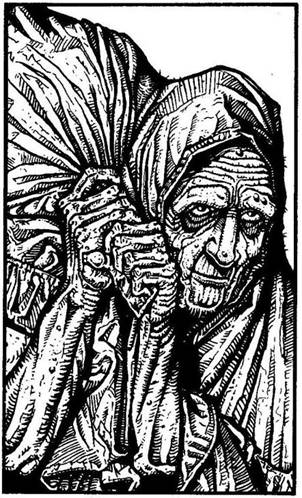
278.
Átvágtok a síkságon, de nem találkoztok semmiféle gonosz lénnyel. Kelet felől feltűnik a Tűz-hegy félelmetes alakja. - Vajon a varázsló még mindig uralja a Tűz-hegy mélyét? - kérdi Stubb kíváncsian. Már éppen válaszolnál, amikor észreveszed, hogy valaki közeledik felétek. Kardot rántasz, de amikor az a valaki a közeletekbe ér, látod, hogy nem más, mint egy öregember, aki egy zsákot cipel a hátán. Megáll előtted, és így szól: - Tedd el a kardodat, nem sok értelme lenne, ha megölnél! Nincs vagyonom, ami értékes lenne számodra, Csupán egy információval tudok szolgálni, de az pénzbe kerül. Fizess 2 Aranyat, és nem bánod meg! Ha fizetsz az öregnek - lapozz a 69-re. Ha nem törődsz vele, és továbbindulsz délnek - lapozz a 348-ra.
279.
Az Illuzionista előhúzza a tőrét, és a három képmás újra támad. Úgy döntesz, hogy nagyot suhintasz a kardoddal, hátha akkor eltalálod a valódi Illuzionistát. Tedd próbára a SZERENCSÉDET! Ha SZERENCSÉD van - lapozz a 232-re. Ha nincs SZERENCSÉD - lapozz a 127-re.
280.
Észreveszel egy benyúló ágat, de nem tudod elkapni. A folyó továbbsodor, de szerencsére megrekedsz egy kis öbölben. Ha volt pajzsod, azt elvesztetted (vesztesz 1 ÜGYESSÉG pontot!). Alig van erőd, hogy partra vonszold magad - rengeteg vizet nyeltél, és teljesen kimerültél. Vesztesz 4 ÉLETERŐ pontot! Balszerencséd miatt átkozódva elindulsz keletnek, arra, amerre a tüzet láttad - lapozz az 50-re.
281.
Gyorsan kivágsz néhány jégtömböt a hegyoldalból, és jégkunyhót építesz magadnak. Bemászol és hallod, hogy kint a hóvihar ellenállhatatlan erővel dühöng. A jégkunyhó belsejében kissé átmelegszel, mégis Élelmiszerkészletedből két adaggal kell elfogyasztanod ahhoz, hogy visszanyerd az erődet a fárasztó gyaloglás és a kunyhóépítés után (így ÉLETERŐ pontjaid száma nem növekszik). Egy óra múlva, amikor a kunyhóból kimászol, látod, hogy a hóvihar elült. Folytatod az utadat. Lapozz a 169-re.

282.
A vasgolyó pontosan célba talál. Mikor belecsapódik a Hóboszorkány gömbjébe, abból fehér villámok pattannak ki. Tedd próbára a SZERENCSÉDET! Ha SZERENCSÉD van - lapozz a 193-ra. Ha nincs SZERENCSÉD - lapozz a 84-re.

283.
Mély lélegzetet veszel, és lábujjhegyen lopakodva elindulsz a bálvány mögött a szemközti alagút felé - lapozz a 370-re.
284.
Csak néhány métert esel, és egy füves kis platón landolsz. Folytatod fárasztó utadat fölfelé. Már egészen közel vagy a csúcshoz, ahol az a különös vörös növény nő. A hosszú hegymászás után leülsz pihenni, és várod a napfelkeltét. Lapozz a 217-re.
285.
Az ajtó egy újabb, végeláthatatlan hosszú alagútra nyílik. Stubb panaszkodni kezd, hogy éhes meg fáradt, ezért aztán leültök pihenni. Ha még van három adag Élelmed, szépen megosztozol barátaiddal. Félóra pihenő után továbbindultok az alagúton, mely nemsokára egy T elágazásba torkollik. Ha balra mész tovább - lapozz a 298-ra. Ha jobbra - lapozz a 135-re.
286.
A Barbár egyetlen értéke egy réz karvédő és egy bőrzacskó, melyben három ezüst nyílhegy van. Elteszed a nyílhegyeket, és megnézed, mit véstek a karvédőbe. Néhány szót tudsz kibetűzni: „Az Erő Hatalom!” Ha fölveszed a karpántot - lapozz a 293-ra. Ha inkább zsebre vágod, és továbbmész a szurdokban - lapozz a 319-re.

287.
Ha az ÉLETERŐD 10 vagy annál kevesebb - lapozz a 151-re. Ha az ÉLETERŐD több, mint 10 - lapozz a 82-re.
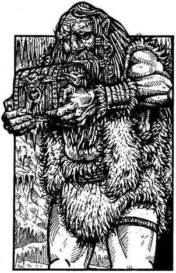
288.
Az alagút csakhamar újabb barlangban ér véget, ahol egy hatalmas, fehér szakállas embert pillantasz meg. A férfin állatbőrök vannak, a kezében egy ládikó, melyet épp a polcra készül feltenni. Ez egy Fagyóriás! Barlangjából csupán egyetlen kijárat van, a túloldalon lévő alagúton át. Ha megpróbálsz átrohanni a barlangon a szemközti alagúthoz - lapozz a 243-ra. Ha rátámadsz a férfira - lapozz a 112-re.

289.
Az elmúlt események eléggé kifárasztottak, ezért leültök pihenni. Stubb valami harapnivaló után néz, Redswift tüzet rak. Hamarosan elnyom az álom. Nyersz 2 ÉLETERŐ pontot! Egy óra múlva pengecsörgésre ébredsz. Fölugrasz és látod, hogy Redswift egy fekete köpenyes alakkal küzd. Mikor feléd fordul, észreveszed, hogy az nem más, mint egy Sötét Elf, aki Redswift és az erdei Elfek esküdt ellensége. Társad segítségére sietsz, de az nélküled is boldogul. Egy hirtelen döféssel leteríti az ellenfelét. - Kinek az ötlete volt, hogy várjuk meg a csónak tulajdonosát? - kérdi torz mosollyal Redswift. Visszautasítod a vádat, és azt javaslod, hogy kutassátok át a Sötét Elf holmiját. Egy kis zacskóban, mely az övéről lóg le, egy üvegfiolát
találsz, melyben zöldes folyadék van. Redswift kihúzza a dugót, beleszagol a fiolába, de nem ismerős a szag. Ha meg akarod inni a folyadékot - lapozz a 158-ra. Ha inkább kiöntöd a földre - lapozz a 173-ra.

290.
Kimész a barlangból, és balra fordulsz. Miközben az alagútban mész, lassan majszolod a süteményt. Elég szikkadt, és nincs semmi íze, de azért erőre kapsz tőle. Nyersz 1 ÉLETERŐ pontot! Lapozz a 198-ra.
291.
A Hóboszorkány hosszan, meredten néz, mielőtt döntene. Ezúttal a csillagot választja. Elmosolyodsz, és kinyitod az öklödet, felmutatva a kör alakú lapocskát. Sikerült túljárnod a Hóboszorkány eszén, aki csak most döbben rá, milyen következményei lesznek ennek. A gömb lassan megtelik fehér füsttel, és hirtelen ezer darabra hullik szét. A Hóboszorkány alakja szertefoszlik. Utolsó halálsikolya betölti a termet, de vége, nincs többé. Boldogan rázol kezet barátaiddal. Örömötök azonban
rövid életű, mert hirtelen félelmetes dübörgő hang üti meg a fületeket. A föld megremeg a lábatok alatt, és a jégfalban hatalmas repedések keletkeznek. A mennyezet kezd beszakadni! Ez lenne hát az esély a menekülésre, amit a Hóboszorkány megígért? Tedd próbára a SZERENCSÉDET! Ha SZERENCSÉD van - lapozz a 3-ra. Ha nincs SZERENCSÉD - lapozz a 358-ra.

292.
A Fagyóriás feléd fordul, és a faládát a feje fölé emeli. Nagyot nyög az erőlködéstől, majd feléd hajítja a ládát. Tedd próbára a SZERENCSÉDET! Ha SZERENCSÉD van - lapozz a 93-ra. Ha nincs SZERENCSÉD - lapozz a 357-re.

293.
A karpánt varázserejű. Nyersz 1 ÜGYESSÉG pontot. Tudod, hogy sietned kell, mielőtt a Halálvarázslat megfogan rajtad. Lapozz a 319-re.

294.
A forgószél fölkap, és a falhoz vág. SZERENCSÉDRE a hátizsákod felfog valamit az ütés erejéből. Vesztesz 2 ÉLETERŐ pontot. Ha még életben vagy - lapozz a 372-re.

295.
A hívők közül senki sem sejti, hogy betolakodó vagy, így háborítatlanul átjutsz a templomukon. Lapozz a 137-re.
296.
Az egyik Dombi Troll felpillant, és észrevesz benneteket. Elordítja magát, mire hárman rátok rontanak a fák közül. Kettejükkel neked kell megküzdened.
ÜGYESSÉG ÉLETERŐ
Első Dombi Troll 8 9
Második Dombi Troll 9 9
Egyszerre kell megküzdened mindkettővel. Minden egyes Fordulóban külön-külön támadnak rád, és neked kell eldöntened, melyikkel küzdesz meg először. Kiválasztott ellenfeleddel a szokásos módon csapj össze. A másikkal szemben ugyancsak a szokásos módon kell meghatároznod dobókocka segítségével a Támadóerődet. Ha a te Támadóerőd a nagyobb, akkor nem sebesíted meg, Csupán kivéded a támadását. Ha az ő Támadóereje a nagyobb, akkor természetesen megsebzett téged. Ha mindkét Trollt legyőzted - lapozz a 164-re.

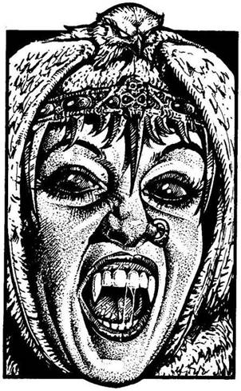
297.
Amint közelebb lépsz a szarkofághoz, hátborzongató női kacagás visszhangzik végig a termen. Egy gyönyörű, hófehér prémekbe öltözött nő emelkedik ki a kőkoporsóból. Mikor rád mosolyog, és megpillantod elővillanó hatalmas szemfogait, már tudod, hogy a Hóboszorkány vámpír! Ha van nálad fokhagyma - lapozz a 210-re. Ha nincs - lapozz a 60-ra.
298.
Az alagút nemsokára véget ér. Zsákutcába jutottatok. A falon, egy vasszögön díszes pajzs lóg. Ha leakasztod, és magaddal viszed - lapozz a 183-ra. Ha inkább megfordultok, és visszamentek az alagúton az előző elágazáshoz - lapozz a 135-re.

299.
A férfi bólint és szól, hogy kövesd. Elindul a bal oldali kijárat felé, és közli, hogy a Hóboszorkány csarnoka az alagút végében van. Ha elindulsz az alagúton, amerre mutatta - lapozz a 214-re. Ha inkább kardot rántasz és rátámadsz - lapozz a 156-ra.

300.
Nagy levegőt véve belépsz a barlangba, abban reménykedve, hogy nem keltesz feltűnést. A bálvány mögött elindulsz a szemben lévő kijárat felé. Tedd próbára a SZERENCSÉDET! Ha SZERENCSÉD van - lapozz a 295-re. Ha nincs SZERENCSÉD - lapozz a 370-re.
301.
Letérdelsz a forrás mellé, és iszol a finom, hűs vízből. A forrás vize azonban mérgezett, és nemsokára görcsös fájdalmat érzel a gyomrodban, amikor a méreg hatni kezd. Vesztesz 4 ÉLETERŐ pontot! Ha még életben vagy - lapozz a 96-ra.

302.
Lassan forogni kezd veled a világ, és mindenből kettőt látsz. Továbbvonszolod magad a szurdok szélén, a laza kövek között botladozva. Lábad azonban nem sokáig bírja tested terhét, arccal a földre zuhansz, és nem is kelsz fel soha többé. A Hóboszorkány halálos átka végzett veled. Kalandod itt véget ér!
303.
Az emberke, aki bent ül, egy Muzsikus. Zöldes-lila tunikát visel térdnadrágja fölött. Láthatólag egyáltalán nem zavarja, hogy bejöttél, nyugodtan játszik tovább a lantján. A barlangban csupán két nagy agyagedény van rajta kívül. Mit teszel?
A Muzsikusra támadsz a
kardoddal? Lapozz a 316-ra.
A zenéje felől érdeklődsz? Lapozz a 80-ra.
Udvariasan biccentesz neki, majd
továbbmész az alagúton? Lapozz a 111-re.
304.
Ahogy elfutsz a gömb mellett, egy fehér villám pattan ki belőle, és a hátadba csapódik. Ha ÉLETERŐ pontjaid száma 10 vagy ennél kevesebb - lapozz a 44-re. Ha több, mint 10 - lapozz a 186-ra.

305.
A megsebzett Hegyi Elf kegyelemért esedezik. Ha el akarod pusztítani - lapozz a 351-re. Ha meghagyod az életét - lapozz a 204-re.
306.
Miután rájöttél, hogy a Gyógyító nem itt lakik, kimászol a barlangból. Lapozz a 355-re.
307.
Az Illuzionista hangosan felnevet; úgy látszik, kardoddal csak valamelyik hasonmását találtad el. A tőre a válladba mélyed. Vesztesz 2 ÉLETERŐ pontot! Lapozz a 279-re.

308.
Szerencsére nem a kardforgató kezed fagyott el, de azért a hóvihar eléggé megviselt. Vesztesz 1 ÜGYESSÉG pontot és 3 ÉLETERŐ pontot! Ha még életben vagy - lapozz a 174-re.
309.
Amikor kihúzod a kardodat a gonosz Agypusztítóból, meghallod társaid nyöszörgését a barlang túlsó végéből. Lassan vonszolják magukat feléd. Elmesélik, hogy az Agypusztító berántotta őket a barlangjába, és nem voltak elég erősek, hogy ellenálljanak neki. Körülnézel a barlangban, és a szemközti falon egy ajtót találsz. Egy eldugott zugban két agyagedényt fedezel fel. Az egyik piros, a másik szürke. Mit teszel?
Kinyitod az ajtót? Lapozz a 176-ra.
Belenézel a piros edénybe? Lapozz a 101-re.
Belenezel a szürke edénybe? Lapozz a 344-re.
310.
Amint a szakadék szélén mész, feltámad a szél, és havat vág az arcodba. Leszegett fejjel haladsz tovább a kavargó hóesésben. A hófüggöny mögül hirtelen sötét árny bontakozik ki. Egy óriási szőrös Mamut áll előtted, hosszú agyarai fenyegetően merednek előre. Hangosan fújtatva támad rád.
Mamut ÜGYESSÉG 10 ÉLETERŐ 11
Ha legyőzted - lapozz a 47-re.

311.
Az alagút végében egy gödör van, melyből egy Törpe próbál meg kikecmeregni, de minduntalan vissza-visszacsúszik. A verem alja telis-tele van hatalmas jégtömbökkel, melyek valószínűleg a gödör fölötti tárnából zuhanhattak le. Egy újabb alázúduló jégtömb épp vállon találja a Törpét. Amikor az a földre rogy, föntről vad örömujjongásokat hallasz. A Törpe észrevesz, és odakiált neked: - Légy átkozott, idegen, ha nem segítesz! Látom, rajtad nincs nyaklánc! - Ha segítesz a Törpének kimászni a veremből - lapozz a 376-ra. Ha nem törődsz vele, és inkább visszamész az első kereszteződéshez - lapozz az 57-re.
312.
Amikor kihúzod az indát a fényre, undorodva veszed észre, hogy az tele van Húsevő Lárvákkal. Szem nélküli fejük körbe-körbe forog friss, élő hús után kutatva, amibe belefúrhatnák magukat. Visszadobod az indát, de az egyik féreg átmászott a kezedre. Szerencsére még időben lerázod magadról, és undorodva eltaposod. Nyersz 1 Szerencse pontot! Ebben a gödörben biztosan nem fogod meglelni a Gyógyítót, így aztán továbbmész. Lapozz a 119-re.

313.
A Fehér Sárkány már-már lesújt rád, amikor erősen megdörzsölöd a rézgyűrűt. Egy harcos jelenik meg előtted. Dobj egy kockával, hogy eldöntsd, melyik harcos lesz a segítségedre.
DOBÁS HARCOS ÜGYESSÉG ÉLETERŐ
1 Lovag 9 10
2 Barbár 8 8
3 Törpe 7 6
4 Elf 7 5
5 Nindzsa 6 6
6 Alabárdos 6 7
A megidézett harcos fog először megküzdeni a Fehér Sárkánnyal.
Fehér Sárkány ÜGYESSÉG 12 ÉLETERŐ 14
Ha a harcos győz, azonnal el is tűnik - lapozz a 139-re. Ha meghal, neked kell folytatnod a harcot. Ha te győzöl - lapozz a 139-re.

314.
Keményen megrántod a kötelet, remélve, hogy a Goblinok éppolyan buták, amilyennek kinéznek. Tedd próbára a SZERENCSÉDET! Ha SZERENCSÉD van - lapozz a 188-ra. Ha nincs SZERENCSÉD - lapozz a 86-ra.

315.
A révész azonnal felpattan, és így szól: - Tíz Aranyért akár Fang városába is elviszlek! Szálljatok be! - Kifizeted a kapzsi révészt, és nemsokára a túlparton vagytok, ahonnan délnek indultok a Pogány-síkságon át Kőhidafalva felé. A távolban hamarosan porfelhőt láttok felemelkedni. Redswift a földre tapasztja a fülét, és hallgatózik. - Lovak vagy Kentaurok, nem tudom eldönteni! - közli kisvártatva. Ha bevárod, akárki vagy akármi is közeleg - lapozz a 180-ra. Ha inkább elrejtőzöl a bozótban - lapozz az 58-ra.

316.
Abban a pillanatban, ahogy a kardodhoz érsz, a zenész egy különös, magasra ívelő dallamba kezd. A bűvös hangok hallatán azonnal megbénulsz, és tehetetlenül nézed, amint a zenész az egyik edényből egy fém nyakláncot vesz elő - az engedelmesség nyakláncát! A nyakadba akasztja, és ettől kezdve a Hóboszorkány hű szolgája leszel örök életedre.

317.
Bár a rózsa hervadt, illata friss és kellemes. Amikor megszagolod, úgy érzed, új erő költözött beléd. Nyersz 3 ÉLETERŐ pontot! Ha még nem tetted volna:
Belefújhatsz a furulyába. Lapozz a 74-re.
Elolvashatod a rovásírást a
boton. Lapozz a 345-re.
Elolvashatod a könyvet. Lapozz a 356-ra.
Ha a föntiek egyikét sem teszed, úgy hagyd el a barlangot, és fordulj balra az alagútban. Lapozz a 198-ra.

318.
Teljes erőből elhajítod a gömböt, mely földet érve ezer darabra hullik. Vakító fehér fény villan, és az alagútban iszonyatos hőhullám közeleg. Elér, még mielőtt megmozdulhatnál. Dobj két kockával, és vond le az összeget az ÉLETERŐDBŐL! Ha még életben vagy - lapozz a 248-ra.
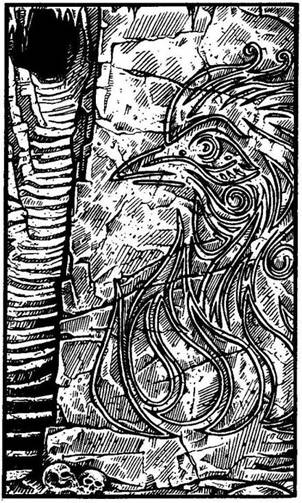
319.
Jobbról egy hatalmas sziklatömböt pillantasz meg, melynek sík falfelületére egy mesebeli madár lángok övezte alakját véste valaki. A szikla mellett lépcsők vezetnek fel egy barlangnyílásig. Ha bemész a barlangba - lapozz a 75-re. Ha inkább továbbmész a kanyonban - lapozz a 161-re.
320.
A Vadembernél nem találsz semmi olyat, amit hasznosnak ítélnél. A kacsa azonban megsült, és élvezettel látsz neki ízletes, omlós húsának. Nyersz 4 ÉLETERŐ pontot! Most visszamehetsz a köveken át a folyó túlsó partjára - lapozz a 364-re; vagy elindulhatsz fel a dombra a tisztás melletti ösvényen - lapozz a 231-re.

321.
Alig mész néhány métert az alagútban, amikor a lábad alatt megreped és beszakad a jég. Egy jégverembe zuhansz, melyet a Hóboszorkány csatlósai ástak. Dobj egy kockával! A kapott számot vond le ÉLETERŐDBŐL! Ha még életben vagy - lapozz a 254-re.

322.
Az előző villámcsapás eléggé megviselt, ezért gyorsan kell döntened. Mit teszel?
Ismét a parittyát használod? Lapozz a 216-ra.
Megpróbálod összezúzni a gömböt
a kardoddal? Lapozz a 244-re.
Megpróbálsz Elmenekülni? Lapozz a 262-re.
323.
Hamarosan egy vasajtó zárja el utadat. Az ajtó mögött az alagút jobbra kanyarodik. Ha van nálad kulcs - lapozz a 165-re. Ha nincs - lapozz a 393-ra.

324.
Bár iszonyúan fáj a fejed, más bajod nem esik. Mikor föltápászkodsz, a barlang belseje felől közeledő léptek zaja üti meg a füledet. Egy púpos, vézna ember alakját véled felfedezni, amint feléd közeledik a sötétben. Ha bevárod, hogy megnézd, ki az - lapozz a 37-re. Ha inkább kirohansz a barlangból - lapozz a 355-re.
325.
Az Elf nyaka körül halványan világító fémláncot fedezel fel. A lánc fénye hirtelen kihuny, fekete színt ölt. Nem igazán érted, mi történik itt, ezért aztán úgy döntesz, jobb, ha továbbmész az alagútban - lapozz a 241-re.

326.
Megbotlasz, és véletlenül az egyik fekete lábnyomra lépsz - lapozz a 87-re.
327.
A Bátorság Amulettjét viseled. Nyersz 2 ÜGYESSÉG pontot! Ha még nem tetted volna:
Belefújhatsz a furulyába. Lapozz a 74-re.
Elolvashatod a rovásírást a
boton. Lapozz a 345-re.
Megszagolhatod a rózsát. Lapozz a 317-re.
Ha a fent említettek közül egyiket sem teszed, menj ki a barlangból, és fordulj az alagútban balra - lapozz a 198-ra.
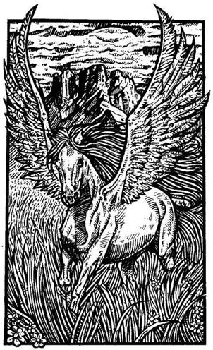
328.
Átadod a Gyógyítónak az ezüsttárgyat. Ő kihajítja azt a résen, és két ujját a szájába téve, hatalmasat füttyent. Néhány pillanat múlva kintről szárnycsapkodást hallasz. A Gyógyító szélesen elmosolyodik, és így szól: - Kösd az ezüstöt a sörényéhez, és parancsolj rá, hogy vigyen el a Tűz-hegyhez. Egy Pegazus a világ végére is elvinne egy ezüstért. Most pedig el kell búcsúznunk. Sok Szerencsét! Remélem, sikerrel jársz. - Köszönetet mondva hálásan megrázod a Gyógyító kezét, majd átpréseled magad a repedésen, és kilépsz a napvilágra. Pompás állat áll előtted. Olyan, mint egy fehér paripa, de szárnyai vannak. Az ezüstöt a sörényéhez kötöd, és felülsz a hátára. Elkiáltod magad, hogy hová vigyen, és a Pegazus nyakába kapaszkodva már repülsz is föl a levegőbe. Kis idő múltán elértek a hegyhez, és a paripa leszáll. Leugrasz a hátáról, ő pedig elrepül. A hegyet borító különös piros növényzetben állva még sokáig kíséred a tekinteteddel, aztán leülsz pihenni, s várod a napfelkeltét. Lapozz a 217-re.

329.
Kinyitod a hátizsákodat, és felajánlasz 10 Aranytallért a Kentauroknak, ha elvisznek Kőhidafalvára. A vezérüknek felcsillan a szeme az arany láttán. Úgy gondolja, hogy talán több is van nálad. Lapozz a 272-re.
330.
Az egyik tőr a fejed mellett repül el, de a másik beleáll a válladba. Vesztesz 2 ÉLETERŐ pontot. Megállsz, kihúzod a tőrt, és visszahajítod az egyik Goblinba. Lapozz a 29-re.

331.
A Hegyi Elf nem is sejti, hogy betolakodó vagy, és nyugodtan elsétál melletted. Lapozz a 241-re.
332.
Redswift és Stubb idegesen figyelnek, arra várva, hogy jobban légy. Sajnos, amitől tartottak, hamarosan bekövetkezik. Három Goblin kardcsörtetve, bosszútól fűtve rohan felétek az alagútban. Fájdalmaid ellenére kénytelen vagy felvenni a harcot az egyik Goblinnal, hogy segíts társaidon.
Goblin ÜGYESSÉG 6 ÉLETERŐ 6
A harc idejére vonj le magadtól 3 ÜGYESSÉG pontot az előző sebesülésed miatt. Ha legyőzöd a Goblint, lapozz a 155-re.
333.
Ösztönösen megragadod a kardod markolatát, miközben eszedbe jutnak a Gyógyító figyelmeztető szavai. Dobj két kockával, és adj hozzá 2-t a kapott összeghez. Ha az így kapott összeg kevesebb vagy ugyanannyi, mint ÜGYESSÉGed - lapozz a 68-ra. Ha a kapott összeg nagyobb, mint ÜGYESSÉG pontjaid száma - lapozz a 185-re.
334.
A díszes ruhába öltözött férfi elmeséli neked, hogy ő kuruzsló, a gyógynövények ismerője. Nemrég költözött ebbe a kunyhóba. Óvatosan megkérdezed tőle, vajon nem hallott-e egy Gyógyító nevű emberről. Állát simogatva elgondolkodik, majd megrázza a fejét, és így szól: - Nem, nem hiszem, hogy valaha is hallottam volna ilyen nevű emberről! - Úgy döntesz, hogy elbúcsúzol a kuruzslótól, hisz már így is elég sok időt elfecséreltél rá. Vesztesz 1 ÉLETERŐ pontot! Visszamész az ösvényen, és folytatod az utadat a folyó mentén. Lapozz a 205-re.
335.
A híd meglehetősen keskeny és csúszós. Tedd próbára a SZERENCSÉDET! Ha SZERENCSÉD van - lapozz a 41-re. Ha nincs SZERENCSÉD - lapozz a 389-re.
336.
Felülsz és látod, hogy a Hóboszorkány gömbje megrepedt, de ez nem okoz benne kárt. Téged figyel és várja, mit teszel. Lapozz a 262-re.
337.
A hóesés egyre erősebb; kavarogva örvénylenek körülötted a hópelyhek. Hóvihar közeleg. Ha kardoddal üreget vájsz magadnak a hóban, hogy ott vészeld át a hóvihart - lapozz a 281-re. Ha inkább továbbmész - lapozz a 229-re.

338.
Nemsokára egy útkereszteződéshez érsz az alagútban. Nincs időd, hogy megnézd a jobb és bal oldali folyosókat, ugyanis szemből egy különös, emberszerű lény közeledik feléd. Lapozz az 59-re.
339.
Sokáig egyenesen halad az alagút, mígnem egy barlang szájánál ér véget. A falakat odabent vastagon borítja a jég, és a barlang közepén, egy jégemelvényen nagy üveggömböt pillantasz meg. A szemközti alagútból hirtelen egy Ork ront be, mire a gömb fényleni kezd. A belsejében egy arc körvonalai jelennek meg, és rémülten ismered fel benne a Hóboszorkányt! A képmás felnevet, és

beszélni kezd. - Bár megöltél - mondja dermesztő hangon -‚ még mindig nem győztél le! A szellemem még mindig a hatalmába keríthet! Csak figyelj! - Az Ork, aki eddig a gömb mellett állt, hirtelen a torkához kap, és fuldokolva megpróbálja leszakítani a nyakából az egyre szorosabbá váló láncot. Erőfeszítése teljesen hiábavaló, és csakhamar némán terül el a padlón. A Hóboszorkány képmása lenézően elmosolyodik: - Többé már nincs szükségem szolgákra, és tudom, hogy ti ketten még mindig viselitek az engedelmesség nyakláncát. Élvezettel fogom végignézni, amint meghaltok! Ez csak amolyan kis előzetes ízelítő lesz az előtt a haláltusa előtt, amit pimasz harcos barátotoknak tartogatok. - Nem akarod végignézni barátaid haldoklását, ezért azon kezded törni a fejed, vajon miképpen győzhetnéd le a Hóboszorkány szellemét. Mit teszel?
Megpróbálod összezúzni a kardoddal
a gömböt? Lapozz a 244-re.
Parittyádból egy vasgolyót lősz ki
a gömbre (ha van nálad)? Lapozz a 216-ra.
Átrohansz a barlangon a szemközti
alagútba? Lapozz a 304-re.
340.
Ha a szám, amit dobtál, páratlan, a dárda elsuhan melletted, de az ostor a bal bokád köré tekeredik, és a földre zuhansz. Lapozz a 108-ra. Ha páros számot dobtál, az ostor nem talál el, de a dárda a karodba fúródik. Vesztesz 3 ÉLETERŐ pontot! Ha még mindig el tudsz futni - lapozz a 177-re.
341.
Mikor kinyitod az ajtót, az Öreg egyik szeme kinyílik. Látszólag egy csöppet sem zavarja, hogy csak úgy betolakodsz a házába. Nyugodtan pihenget tovább a hintaszékében. Ha megkérded tőle, vajon ő-e a Gyógyító - lapozz a 71-re. Ha inkább azt mondod neki, hogy eltévedtél - lapozz a 334-re.
342.
Csak egy gyertyát és egy tűzszerszámot találsz, ami talán majd hasznodra lehet. Magadhoz veszed őket, lemászol a kötélhágcsón, és folytatod az utadat keletnek az alagútban - lapozz a 92-re.
343.
- Sose bánkódj miatta! - mondja a Gyógyító. - Egy kicsit jobban kell majd koncentrálnod. Ha készen állsz, indulj! - Elmondja még, hogy a farönk elég keskeny, és a verem körülbelül 15 méter széles. Nagy levegőt veszel, és a sötétben tapogatózva a fatörzsre lépsz. Dobj két kockával, és a kapott összeghez adj hozzá kettőt. Ha az eredmény ugyanannyi vagy kevesebb, mint ÜGYESSÉG pontjaid száma - lapozz a 91-re. Ha az eredmény több, mint ÜGYESSÉG pontjaid száma - lapozz a 78-ra.
344.
A szürke edény alján egy régi pergamentekercset fedezel fel, melyen még ép a viaszpecsét. Ha feltöröd a pecsétet, és elolvasod, mi van a pergamenre írva - lapozz a 224-re. Ha nem akarod elolvasni, belenézhetsz a piros edénybe - lapozz a 101-re, vagy kimehetsz a barlangból a túloldali ajtón - lapozz a 176-ra.
345.
Sajnos a rovásírást kevéssé ismered, így hát elrakod a botot a hátizsákodba, hátha később kideríted, mi van ráírva. Ha még nem tetted volna:
Belefújhatsz a furulyába. Lapozz a 74-re.
Megszagolhatod a rózsát. Lapozz a 317-re.
Elolvashatod a könyvet. Lapozz a 356-ra.
Ha egyiket sem teszed a fent említettek közül, kimehetsz a barlangból - lapozz a 198-ra.

346.
A kuruzsló igazat mondott. Tablettái csökkentik a fájdalmadat, és valamivel jobban érzed magad. Nyersz 4 ÉLETERŐ pontot! Elindulsz, hogy megkeresd az igazi Gyógyítót. Visszamész az ösvényen a folyóvölgybe, és azon mész tovább - lapozz a 205-re.
347.
Átkutatod a Goblinok ruháját, és egy kevés sózott halat találsz, meg egy gyertyatartót és 2 Aranytallért. Mindent a hátizsákodba raksz, és magadhoz veszed a Goblinok tőreit is. Nyakláncuk teljesen megfeketedett, de a nyakukról nem tudod levenni. Továbbmész az alagúton - lapozz a 106-ra.
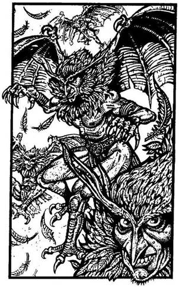
348.
A kietlen síkság egyre egyhangúbb, és lankad a figyelmetek. A pajzsotokon megcsillanó napfény odavonz néhány ragadozót, és észre sem veszitek, amikor már a fejetek fölött köröznek. Bőrük zöldes színű, két hártyás szárnyuk van, és éles karmaikkal csapnak le az áldozataikra. A négy Madárember közül az egyik hirtelen elkiáltja magát, erre a többi zuhanórepülésben rátok támad. Tedd próbára a SZERENCSÉDET! Ha SZERENCSÉD van - lapozz a 256-ra. Ha nincs SZERENCSÉD - lapozz a 369-re.
349.
Esel néhány métert, és egy jeges kiszögellésen érsz földet. Szerencsére bokaficammal megúszod. Vesztesz 1 ÉLETERŐ pontot! Kardod segítségével kapaszkodókat vájsz a hasadék falába, és felmászol rajta. A magas hóban nehezen lépkedve folytatod az utadat - lapozz a 212-re.

350.
A Csörgőkígyó a csizmád szárába mar, és mérgét beleereszti annak kemény bőrébe. Kardod egyetlen suhintásával levágod a fejét, és folytatod az utadat a szurdokba. Lapozz a 252-re.
351.
Folytasd a harcot!
Hegyi Elf ÜGYESSÉG 6 ÉLETERŐ 2
Ha legyőzted - lapozz a 325-re.
352.
A vasgolyó átszáll a termen, de nem találja el a Fagyóriást. Nincs időd, hogy újratöltsd a parittyádat, így csak a kardodra hagyatkozhatsz - lapozz a 292-re.
353.
Redswift húzza a rövidebbet, és már nyúlna is a ládához, amikor Elf-ösztöne hirtelen azt súgja neki, hogy a láda - csapda. Alaposan megvizsgálja, és egy kis gombot talál annak fogantyúja alatt. Megnyomja, mire a láda fedele felpattan. Egy pár szürke bőrcsizmát találtok benne. - Az Elf-ősök csizmája! - ismeri föl Redswift. - Micsoda kincs! Senki sem tudja ma már, hogyan lehet ilyet készíteni. Ha ezt a csizmát a lábadra húzod, senki sem fogja meghallani a lépteid zaját, akárhol járj is benne. Húzzunk sorsot újra, hogy eldöntsük, melyikünk viselje. - Dobj egy kockával! Ha 1-et vagy 2-t dobsz - lapozz a 203-ra. Ha 3-at vagy 4-et dobsz - lapozz a 265-re. Ha 5-öt vagy 6-ot dobsz - lapozz a 379-re.

354.
A hátizsákban egy pár öreg bőrszandált, egy kitömött patkányt és egy penészes kenyeret találsz. Ha meg akarod enni a kenyeret - lapozz a 247-re. Ha inkább gyorsan továbbmész - lapozz a 221-re.
355.
Félig futva, félig csúszva érsz a szurdok aljába. Egyre gyengébbnek érzed magad. Vesztesz 1 ÉLETERŐ pontot! Továbbindulsz keletnek, fölfelé a kanyonban. Lapozz a 377-re.

356.
Kinyitod a kapcsot, amely a könyvet lezárta, de egy rejtett kis tű megszúrja az ujjadat. A hegye mérgezett az óvatlan tolvajok ellen. Vesztesz 4 ÉLETERŐ pontot! Ha még élsz, kinyithatod a könyvet - lapozz a 97-re, vagy ha még nem tetted volna:
Belefújhatsz a furulyába. Lapozz a 74-re.
Elolvashatod a rovásírást a
boton. Lapozz a 345-re.
Megszagolhatod a rózsát. Lapozz a 317-re.
Ha egyiket sem teszed, jobb, ha kimész a barlangból - lapozz a 198-ra.
357.
Nem vagy elég gyors, és a feléd röpülő faláda gyomron talál. Levegő után kapkodva a falnak tántorodsz. Vesztesz 2 ÉLETERŐ pontot! A Fagyóriás feléd indul, hogy végezzen veled.
Fagyóriás ÜGYESSÉG 10 ÉLETERŐ 10
Minden Fordulóban 2-vel csökkentened kell a Támadóerődet a sebesülésed miatt. Két Forduló után akár Elmenekülhetsz a szemközti alagúton át - lapozz a 338-ra. Ha te győzöl - lapozz a 45-re.
358.
Egy hatalmas jégtömb éppen a fejeden talál el. Vesztesz 4 ÉLETERŐ pontot! Ha még élsz - lapozz a 90-re.
359.
A Gyógyító elveszi tőled a tojást, és lecsapja a tetejét. A nyakában lógó amulettből kevés port szór a tojásba. Egy pálcával összekeveri, és feléd nyújtja, hogy idd ki. Megbízol a Gyógyító tudásában, kiiszod a nyers sárkánytojást. Ekkor arra kér, indulj el előtte - lapozz a 154-re.
360.
Az ár ismét magával ragad és elborít. Ezúttal már nincs erőd a felszínre úszni, mert a hátizsákodban lévő arany súlya lehúz a mélybe. Kalandod itt véget ér.
361.
Vesztesz 1 Szerencse pontot! Lapozz a 127-re.
362.
A szarvas sisak tökéletesen illik a fejedre, és remekül kiegészíti a vértezetedet. Nyersz 1 ÜGYESSÉG pontot! Redswift magához veszi a Kentaur lándzsáját, majd mindhárman útra keltek Kőhidafalva felé - lapozz a 278-ra.
363.
Lassan mászol felfelé a hegyoldalban, amikor egy sziklafalhoz érsz, mely túl meredek ahhoz, hogy megmászd. Megkerülöd, és ekkor látod, hogy a két hegy között lévő vízmosást vastag jégfal - egy gleccser zárja le. A szíved hevesebben kezd verni, amikor a jégfalon megpillantod a prémdarabkát, amelyről a vadász mesélt neked. Bár a bejáratot nem látod, bátran indulsz el előre. Becsukod a szemedet, amikor úgy gondolod, hogy mindjárt nekiütközöl a jégfalnak, de simán átgyalogolsz rajta, hisz csak káprázat volt. Egy jégbe vájt alagútban találod magad. Elindulsz rajta, és nemsokára egy T elágazáshoz érsz. Ha balra fordulsz - lapozz a 395-re. Ha jobbra mész - lapozz a 215-re.
364.
Sikerül átugrálnod a köveken a folyó túlsó partjára, miközben a Halálvarázslat tovább pusztítja erődet. Vesztesz 1 ÉLETERŐ pontot! Jobbra fordulsz, és elindulsz a folyó mentén - lapozz a 115-re.
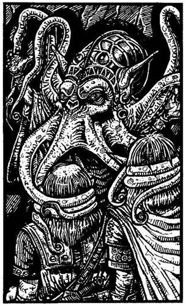
365.
Az alagút egy ajtóban ér véget, mely kinyílik, még mielőtt hozzáérnél. Bepillantasz a barlangba, és meglepetten látod, amint Redswift és Stubb engedelmesen letérdel egy díszes ruhába öltözött polipfejű lény előtt, mely a fejük köré tekeri egy-egy csápját. Barátaid egy Agypusztító hipnotikus hatalmába kerültek. Ha nyakadban van a Bátorság Amulettje - lapozz a 189-re. Ha nincs - lapozz a 126-ra.
366.
Átkutatod a Goblinok ruházatát, és egy kevés sózott halat, egy gyertyát és 2 Aranytallért találsz. Úgy döntesz, hogy elveszed ezeket. Mindkét Goblin nyakában fémlánc van, de nem tudod levenni róluk. Elveszed a tőrüket, és kapaszkodókat vágva a gödör falába, kimászol. Felveszed kardodat, és eldöntöd, merre is menj tovább, hisz lehetnek még csapdák az alagútban. Ha mégis erre mész tovább - lapozz a 88-ra. Ha inkább visszamész az elágazásig, és a másik úton mész tovább - lapozz a 29-re.

367.
Megpróbálsz felállni, de a lábad merev és nehéz, mint az ólom. Redswiftre pillantasz; ő is megpróbál felállni, de igyekezete hiábavalónak bizonyul. Miközben kezd elhomályosulni előtted a világ, rájössz, hogy a Hóboszorkány mégiscsak bosszút állt. Utad itt véget ér.
368.
Az alagutat egy ajtó zárja le. Füledet rátapasztva hallgatózol. Bentről csoszogó léptek zaját hallod. Ha bekopogsz - lapozz a 83-ra. Ha inkább visszafutsz az elágazáshoz, és egyenesen továbbmész - lapozz a 150-re.
369.
Túl lassan húzod elő a kardodat, és a Madárember karmaival lecsap rád. Vesztesz 2 ÉLETERŐ pontot! Figyeled, ahogy újra felszáll, és támadni készül. Most azonban már felkészülten várod.
Madárember ÜGYESSÉG 12 ÉLETERŐ 8
Ha legyőzöd - lapozz a 18-ra.
370.
Már majdnem a kijáratnál vagy, amikor a hívők abbahagyják a kántálást. Fölállnak, és egyikük megszólít. Megkérdi, miért nem énekelted velük a Megfagyottak dalát. Ha van nálad egy bűvös furulya, azt mondhatod, hogy a Hóboszorkány hívatott, hogy játssz neki - lapozz a 31-re. Ha nincs, vagy megküzdesz velük - lapozz a 143-ra, vagy megpróbálhatsz beszaladni az alagútba - lapozz a 33-ra.

371.
Mielőtt elérnéd a menedéket nyújtó kiugrót, a lavina magával sodor a mélybe. Tedd próbára a SZERENCSÉDET! Ha SZERENCSÉD van - lapozz a 257-re. Ha nincs SZERENCSÉD - lapozz a 64-re.

372.
A vihar, amilyen hirtelen jött, olyan hirtelen el is múlik, és minden újra csöndes lesz. Barátaid, súlyos sebesüléseik ellenére, élnek. Stubb, bár iszonyatos fájdalmai vannak, mégis megereszt egy gúnyos megjegyzést azokról, akik mindent megfogdosnak, amit meglátnak. A célzást elengeded a füled mellett, és miután pajzsodat a karodra csatolod (nyersz 1 ÜGYESSÉG pontot!), visszaindultok, és elhaladtok az előző elágazás mellett - lapozz a 135-re.
373.
Egy vasgolyót helyezel a parittyádba, többször megforgatod a fejed fölött, aztán rálősz a Fagyóriásra. Dobj két kockával! Ha a kapott összeg ugyanannyi vagy kevesebb, mint ÜGYESSÉG pontjaid száma - lapozz a 12-re. Ha a kapott összeg nagyobb, mint ÜGYESSÉG pontjaid száma - lapozz a 352-re.
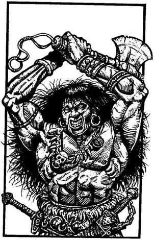
374.
A Barbárok megszokták, hogy az emberek odalopódznak hozzájuk, így aztán a kőpadlón kopogó lépteid zajára ez a Barbár is felriad. Rossz szokásaik egyike, hogy előbb támadnak, s csak utána kérdeznek. Ez is felugrik, és csatabárdjával rád támad.
Barbár ÜGYESSÉG 9 ÉLETERŐ 8
Ha legyőzöd - lapozz a 286-ra.
375.
Szitkozódsz, amiért lövésed célt téveszt. Vesztesz 1 Szerencse pontot! Fehér villám csap ki a gömbből, és a melledbe fúródik. Ha ÉLETERŐd 10 vagy annál kevesebb - lapozz a 44-re. Ha több mint 10 - lapozz a 122-re.
376.
Lefekszel a verem szélére, és kezedet lenyújtod a Törpének. A fönti őrök dühösen látják, hogy a Törpe kiszabadul. Visszafuttok az elágazáshoz, ahonnan a Törpe jobbra fordul, te pedig elbúcsúzol tőle, mondván, hogy egyenesen mész tovább, mert a Hóboszorkányt keresed, hogy elpusztítsd. A Törpe megköszöni, hogy megmentetted az életét, és elbúcsúzik tőled, mert most, hogy már szabad, mielőbb vissza akar térni a falujába. Hálája jeléül átnyújt egy bőrzsákot, majd futásnak ered, de még mielőtt eltűnne a szemed elől, visszakiált: - Óvakodj a Fehér Patkánytól! - Kinyitod a bőrzsákot, és egy parittyát meg három vasgolyót találsz benne. Elteszed a Törpe ajándékát, és elindulsz az alagúton - lapozz a 125-re.
377.
Igen-igen elfáradsz a fölfelé vezető nehéz úton, és nem nézed, hová lépsz. Véletlenül rátaposol egy Csörgőkígyóra, mely beléd mélyeszti méregfogát. Tedd próbára a SZERENCSÉDET! Ha SZERENCSÉD van - lapozz a 350-re. Ha nincs SZERENCSÉD - lapozz a 167-re.
378.
Kardot rántasz, és a hatalmas fehér szörnyre rontasz.
Yeti ÜGYESSÉG 11 ÉLETERŐ 12
Ha legyőzted, lapozz a 67-re.
379.
Te nyersz, és örülsz a szerencsédnek. Nyersz 1 Szerencse pontot! Lerúgod a lábadról régi, kopott csizmádat, és felhúzod a mágikus erejű Elf-csizmát. Ugrálsz egy keveset, de semmi zajt nem ütsz bennük. Vidáman indulsz útnak a társaid előtt, akik irigykedve követek. Lapozz a 20-ra.
380.
A Hóboszorkány erős, és sikerül kicsavarnia a botot a kezedből. A földre dobja, és szemével hipnotizál. Most már ő uralkodik az akaratodon. Meglazítod a gallérodat, és szabaddá teszed a nyakadat, hogy a véredet szívhassa. Mostantól az ő szolgája leszel örök életedre az élőholtak világában.

381.
A hátizsákodban lévő arany súlya lehúz a mélybe. Ha leveszed a hátizsákot - lapozz a 42-re. Ha inkább megpróbálsz feljönni a víz felszínére - lapozz a 287-re.
382.
Amint kardot rántasz, a Hegyi Elf félelmetes csatakiáltást hallatva, köpenyét hátradobva szintén előrántja a kardját.
Hegyi Elf ÜGYESSÉG 6 ÉLETERŐ 6
Ha legyőzöd - lapozz a 208-ra.
383.
Mire mind a hárman átjuttok a savzuhany alatt, eléggé elkedvetlenedtek. Vesztesz 1 Szerencse pontot! Mindazonáltal eltökélten indultok tovább - lapozz a 339-re.
384.
Amilyen mélyen csak tudod, az arcodba húzod a csuklyát, és elindulsz a jobb oldali kijárat felé. Tedd próbára a SZERENCSÉDET! Ha SZERENCSÉD van - lapozz a 295-re. Ha nincs SZERENCSÉD - lapozz a 370-re.
385.
Percről percre gyengébbnek érzed magad. Vesztesz 1 ÉLETERŐ pontot! Két domb között egy szurdokot veszel észre, mely keletnek tart. Úgy döntesz, hogy arra indulsz, hátha ott megtalálod a Gyógyítót. Hamarosan egy barlangnyílást pillantasz meg a kanyon bal oldalán a domboldalban.
Ha föl akarsz mászni a barlang bejáratához - lapozz a 170-re. Ha inkább továbbmész a szurdokon - lapozz a 377-re.
386.
Nem vagy elég gyors, hogy elugorj a feléd repülő tőr elől, és az mélyen beléd fúródik. Vesztesz 2 ÉLETERŐ pontot! Még arra sincs időd, hogy kihúzd a tőrt az oldaladból, amikor a Goblin újra támad. Puszta kézzel kell vele megküzdened.
Goblin ÜGYESSÉG 5 ÉLETERŐ 5
Minden Fordulóban vonj le 3-at Támadóerőd pontjaiból, mert nincs nálad a kardod. Ha legyőzöd a Goblint - lapozz a 43-ra.
387.
A hideg szinte elviselhetetlen. A kezedet és a lábadat már nem is érzed, és nem tudod, képes leszel-e, ha kell, a kardodat használni. A hóvihar lassan eláll, de dühös vagy magadra, amiért nem húzódtál fedezékbe, mert az egyik kezed lefagyott! Tedd próbára a SZERENCSÉDET! Ha SZERENCSÉD van - lapozz a 308-ra. Ha nincs SZERENCSÉD - lapozz a 225-re.
388.
Menet közben az Elf bemutatkozik: - Az én nevem Redswift, az övé pedig Stubb - mondja a mosolygós Törpére mutatva. - Itt ismerkedtünk meg a gonosz Hóboszorkány szolgálatában. Mindketten szeretnénk visszajutni a falunkba. Én a Holdkő-domboknál lakom, Stubb pedig Kőhidafalváról való. Ha sikerül egyszer kijutnunk ezekből a pokoli
barlangokból, Szívesen vennénk, ha velünk tartanál. Kőhidafalva épp útba esik, ahogy a falumba megyünk. De még az is nagyon messze van. - Redswift már éppen folytatná, amikor hirtelen valami különöset fedezel fel a földön, és szólsz nekik, hogy ők is nézzék meg. Fekete és fehér lábnyomok vezetnek egymás mellett vagy 20 méteren át. Képtelen vagy rájönni, mi lehet ez. Mit teszel?
Elindulsz a fehér lábnyomokon? Lapozz a 11-re.
Elindulsz a fekete lábnyomokon? Lapozz a 87-re.
Óvatosan elindulsz a lábnyomok
között? Lapozz a 220-ra.
389.
Már majdnem átérsz a hídon, amikor megcsúszol, és a mélybe zuhansz. Tedd próbára a SZERENCSÉDET! Ha SZERENCSÉD van - lapozz a 349-re. Ha nincs SZERENCSÉD - lapozz a 197-re.
390.
Előhúzod a kardodat, és elindulsz az öreg felé. Megkérded, miért olyan fösvény, hogy vérdíjat kér tőled. Kardod hegyét az állához szögezve a falhoz szorítod, és kérdőre vonod, hogy egy úgynevezett emberbarát Gyógyítónak miért kell 50 Aranyat kérnie egy ember életének a megmentéséért. Az öreg remegni kezd, és így szól: - Jól van. Sajnálom, de nem én vagyok az igazi Gyógyító. Csak egyszerű kuruzsló vagyok, akinek a szerencsecsillaga leáldozóban van. Arra gondoltam, hogy nemsokára már úgysem lesz szükséged az aranyadra, és nem bánnád, ha egy kevés az enyém lenne belőle. De belátom, tévedtem. Ha akarod, saját
tablettámból adok neked néhányat, azok talán majd enyhítik a fájdalmadat. Természetesen ingyen adom. - Még mindig a falhoz szögezve egy kis üvegcsét húz elő köntöse zsebéből. Három zöld tablettát vesz elő belőle, és feléd nyújtja. Elveszed tőle, és otthagyod az öreget, de még figyelmezteted: örülhet, hogy élve megúszta. A kunyhó előtt eldöntöd, mit tegyél. Ha beveszed a tablettákat - lapozz a 346-ra. Ha eldobod őket, és visszaindulsz az ösvényen, hogy a folyó mentén menj tovább - lapozz a 205-re.
391.
Ha kardforgató karod lefagyott - lapozz a 195-re. Ha nem - lapozz a 249-re.
392.
A Hóboszorkány hosszan rád mered, majd így kiált: - Kör! - Rémület ül ki az arcodra, mikor kinyitod az öklödet, és kivillan a csillag alakú lapocska. A Hóboszorkány gonoszul felkacag, és egy újabb villámot lövell feléd, mely a melledbe fúródik, és azonnal végez veled. Kalandod itt véget ér.
393.
A hegy alagútjának a foglya vagy. Tudod, hogy a Hóboszorkány őrei nemsokára felfedeznek, és örök életedre rabszolgasorba vetnek. Küldetésed kudarccal végződött.
394.
Ahogy lefelé mászol a sötét mélységbe, hirtelen hideg, nyálkás, kukacszerű lárvát tapintasz. Körülbelül akkora, mint az ujjad, és érzed, hogy hasonló
lárvák lepik el a testedet és karodat. Nem tudod lerázni magadról őket, mert félsz, hogyha megmozdulsz, leesel. A sötétben nem látod, miként köröz a fejük áldozat után kutatva, de érzed a fájdalmat, amikor az egyik beléd mélyeszti kampó fogát. Húsevők támadtak meg. Pánikszerűen menekülsz felfelé az indán, de a Halálvarázslat átka alatt ez nehezen megy. Ha az ÉLETERŐD 6 vagy kevesebb - lapozz a 191-re. Ha ÉLETERŐD több mint 6 - lapozz a 222-re.
395.
Az alagút éles kanyart vesz jobbra. Mikor befordulsz a sarkon, csaknem belebotlasz egy magas, sápadt bőrű, emberszerű lénybe. Fehér köpenyt visel, csuklyáját mélyen a szemébe húzza. Ez egy Hegyi Elf, a Hóboszorkány egyik csatlósa. Mit teszel?
Biccentesz neki, és továbbmész, mintha mi
sem történt volna? Lapozz a 89-re.
Azt mondod, hogy csatlakozni akarsz
a Hóboszorkány seregéhez? Lapozz a 274-re.
Kardoddal támadsz rá? Lapozz a 17-re.
396.
Az írás eltűnik, mielőtt el tudnád olvasni. Vesztesz 1 Szerencse pontot! Ha még nem tetted volna, belenézhetsz a piros edénybe - lapozz a 101-re, vagy kimehetsz a barlangból a túloldali ajtón - lapozz a 176-ra.
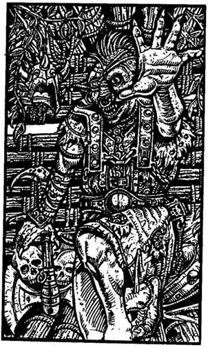
397.
Az Elf látja, amint kardoddal rárontasz. Felhúzza az íját, és halálos pontossággal céloz. Redswift bátyja kitűnő íjász: nyílvesszője szíven talál, és azonnal végez veled.
398.
Ahogy fölfelé mászol a kötélhágcsón, föntről csoszogó léptek zajára leszel figyelmes. A lyukon át egy viskóba jutsz, ahol azonban nem a Gyógyító fogad. Egy kegyetlen Ember-Ork lakhelyére tolakodtál be. Kardot rántasz, amikor ő csatabárdjához nyúl.
Ember-Ork ÜGYESSÉG 8 ÉLETERŐ 6
Ha legyőzted - lapozz a 342-re.
399.
Stubb, aki a második őr, most felébreszt az éjszaka közepén. Az éjszaka további része békésen telik el, és reggel folytatjátok utatokat Kőhidafalva felé. Lapozz a 13-ra.
400.
Gyönyörű nap virrad rád, talán életed legszebb napja. A gonosz Hóboszorkány szelleme elpusztult, és te megszabadultál a szörnyű átoktól. Amikor elindulsz lefelé a hegyről, eszedbe jut a kedves, önzetlen Gyógyító, és barátaid, Redswift meg Stubb. Hirtelen elfog a vágy, hogy újra lásd jó öreg Törpe ismerősödet, ezért amilyen gyorsan csak tudsz, elindulsz Kőhidafalvára, abban a reményben, hogy barátod már visszatért a Sötét Erdőből. Megérdemled a pihenést, de hogy lesz-e benne részed, az már egy másik történet…